library(tidyverse)
library(beyonce)
library(brms)
library(patchwork)
library(tidybayes)
library(bayesplot)
library(metRology)16 Metric-Predicted Variable on One or Two Groups
In the context of the generalized linear model (GLM) introduced in the previous chapter, this chapter’s situation involves the most trivial cases of the linear core of the GLM, as indicated in the left cells of Table 15.1 (p. 434), with a link function that is the identity along with a normal distribution for describing noise in the data, as indicated in the first row of Table 15.2 (p. 443). We will explore options for the prior distribution on parameters of the normal distribution, and methods for Bayesian estimation of the parameters. We will also consider alternative noise distributions for describing data that have outliers. (Kruschke, 2015, pp. 449–450)
Although I agree this chapter covers the “most trivial cases of the linear core of the GLM”, Kruschke’s underselling himself a bit, here. In addition to “trivial” Gaussian models, Kruschke went well beyond and introduced robust Student’s \(t\) modeling. It’s a testament to Kruschke’s rigorous approach that he did so so early in the text. IMO, we could use more robust Student’s \(t\) models in the social sciences. So heed well, friends.
16.1 Estimating the mean and standard deviation of a normal distribution
The Gaussian probability density function follows the form
\[p(y \mid \mu, \sigma) = \frac{1}{\sigma \sqrt{2 \pi}} \exp \left (-\frac{1}{2} \frac{(y - \mu)^2}{\sigma^2} \right ),\]
where the two parameters to estimate are \(\mu\) (i.e., the mean) and \(\sigma\) (i.e., the standard deviation). If you prefer to think in terms of \(\sigma^2\), that’s the variance. In case is wasn’t clear, \(\pi\) is the actual number \(\pi\), not a parameter to be estimated.1s
In the text, Kruschke referred to the \(\sigma \sqrt{2 \pi}\) portion of the equation as \(Z\), and called it a normalizer. This sets the stage to make to points down the road. The first is we sometimes talk in terms of the \(Z\) distribution, and Kruschke likes to refer to standardized coefficients as \(\zeta\)s, rather than \(\beta\)s. The other point is we sometimes express model quantities with standardized effect sizes, and the whole standardization issue has a connection to the \(Z\) distribution.
We’ll divide Figure 16.1 into data and plot steps. First we load the primary packages.
I came up with the primary data like so:
d <- crossing(y = seq(from = 50, to = 150, length.out = 100),
mu = c(87.8, 100, 112),
sigma = c(7.35, 12.2, 18.4)) |>
mutate(density = dnorm(y, mean = mu, sd = sigma),
mu = factor(mu, labels = str_c("mu==", c(87.8, 100, 112))),
sigma = factor(sigma, labels = str_c("sigma==", c(7.35, 12.2, 18.4))))
head(d)# A tibble: 6 × 4
y mu sigma density
<dbl> <fct> <fct> <dbl>
1 50 mu==87.8 sigma==7.35 9.80e- 8
2 50 mu==87.8 sigma==12.2 2.69e- 4
3 50 mu==87.8 sigma==18.4 2.63e- 3
4 50 mu==100 sigma==7.35 4.85e-12
5 50 mu==100 sigma==12.2 7.37e- 6
6 50 mu==100 sigma==18.4 5.40e- 4Instead of putting the coordinates for the three data points in our d tibble, I just threw them into their own tibble in the geom_point() function.
Okay, let’s talk color and theme. For this chapter, we’ll take our color palette from the beyonce package (Miller, 2021). As one might guess, the beyonce package provides an array of palettes based on pictures of Beyoncé. The origins of the palettes come from https://beyoncepalettes.tumblr.com/. Our palette will be #126.
beyonce_palette(126)bp <- beyonce_palette(126)[]
bp[1] "#484D53" "#737A82" "#A67B6B" "#DABFAC" "#E7DDD3" "#D47DD2"
attr(,"number")
[1] 126Our overall theme will be based on the default ggplot2::theme_grey().
theme_set(
theme_grey() +
theme(text = element_text(color = "white"),
axis.text = element_text(color = beyonce_palette(126)[5]),
axis.ticks = element_line(color = beyonce_palette(126)[5]),
legend.background = element_blank(),
legend.box.background = element_rect(fill = beyonce_palette(126)[5],
color = "transparent"),
legend.key = element_rect(fill = beyonce_palette(126)[5],
color = "transparent"),
legend.text = element_text(color = beyonce_palette(126)[1]),
legend.title = element_text(color = beyonce_palette(126)[1]),
panel.background = element_rect(fill = beyonce_palette(126)[5],
color = beyonce_palette(126)[5]),
panel.grid = element_blank(),
plot.background = element_rect(fill = beyonce_palette(126)[1],
color = beyonce_palette(126)[1]),
strip.background = element_rect(fill = beyonce_palette(126)[4]),
strip.text = element_text(color = beyonce_palette(126)[1]))
)Here’s Figure 16.1.
d |>
ggplot(aes(x = y)) +
geom_area(aes(y = density),
fill = bp[2]) +
geom_vline(xintercept = c(85, 100, 115),
color = bp[5], linetype = 3) +
annotate(geom = "point",
x = c(85, 100, 115), y = 0.002,
color = bp[6], size = 2) +
scale_y_continuous(expression(italic(p)(italic(y)*"|"*mu*", "*sigma)),
breaks = NULL, expand = expansion(mult = c(0, 0.05))) +
ggtitle("Competing Gaussian likelihoods given the same data") +
coord_cartesian(xlim = c(60, 140)) +
facet_grid(sigma ~ mu, labeller = label_parsed)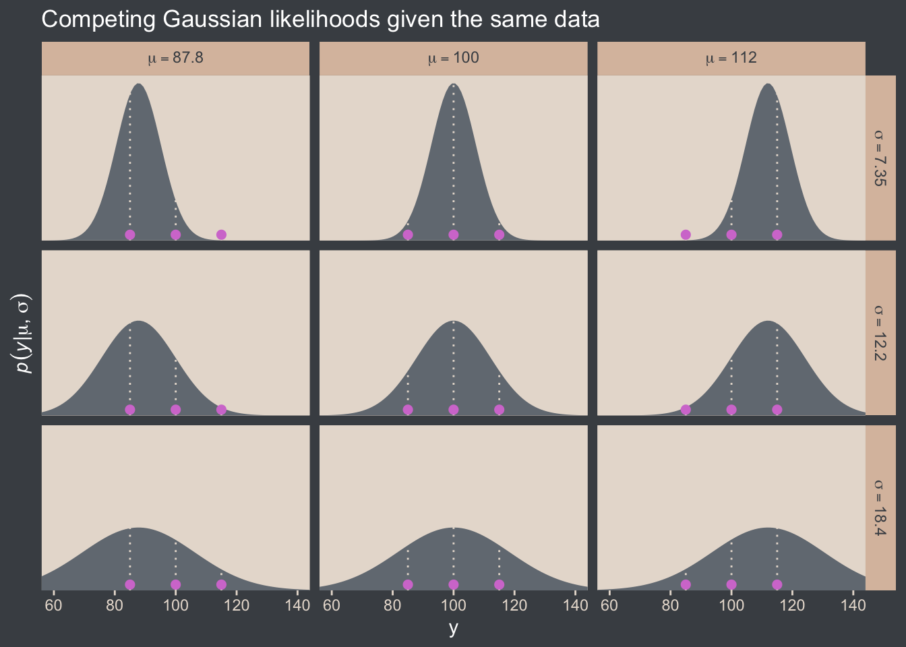
Here’s how you might compute the \(p(D \mid \mu, \sigma)\) values and identify which combination of \(\mu\) and \(\sigma\) returns the maximum value for the data set.
crossing(y = c(85, 100, 115),
mu = c(87.8, 100, 112),
sigma = c(7.35, 12.2, 18.4)) |>
mutate(density = dnorm(y, mean = mu, sd = sigma)) |>
group_by(mu, sigma) |>
summarise(`p(D|mu, sigma)` = prod(density)) |>
ungroup() |>
mutate(maximum = `p(D|mu, sigma)` == max(`p(D|mu, sigma)`))# A tibble: 9 × 4
mu sigma `p(D|mu, sigma)` maximum
<dbl> <dbl> <dbl> <lgl>
1 87.8 7.35 0.0000000398 FALSE
2 87.8 12.2 0.00000172 FALSE
3 87.8 18.4 0.00000271 FALSE
4 100 7.35 0.00000248 FALSE
5 100 12.2 0.00000771 TRUE
6 100 18.4 0.00000524 FALSE
7 112 7.35 0.0000000456 FALSE
8 112 12.2 0.00000181 FALSE
9 112 18.4 0.00000277 FALSE That is, this is a code instantiation of when Kruschke wrote:
The probability of the entire set of independent data values is the multiplicative product, \(\prod_i p(y_i \mid \mu, \sigma) = p(D \mid \mu, \sigma)\), where \(D = \{y_1, y_2, y_3\}\). (p. 450)
The combination of mu == 100 and sigma == 12.2 had the maximum value, or otherwise put, the most credible combination of candidate data-generating population parameters for the normal distribution, given the three data points in the y vector.
16.1.1 Solution by mathematical analysis Heads up on precision
Not much for us, here. But we might reiterate that sometimes we talk about the precision of the normal distribution (see page 453), which is the reciprocal of the variance (i.e., \(\frac{1}{\sigma^2}\)). As we’ll see, the brms package doesn’t use priors parameterized in terms of precision, and nor does Stan, which is the computational engine on which brms is based. But JAGS does, which means we’ll need to be able to translate Kruschke’s precision-laden JAGS code into \(\sigma\)-oriented brms code in many of the remaining chapters.
Proceed with caution.
16.1.2 Approximation by MCMC in JAGS HMC in brms
Let’s load and glimpse() at the TwoGroupIQ.csv data.
my_data <- read_csv("data.R/TwoGroupIQ.csv")
glimpse(my_data)Rows: 120
Columns: 2
$ Score <dbl> 102, 107, 92, 101, 110, 68, 119, 106, 99, 103, 90, 93, 79, 89, 137, 119, 126, 110, 71, 114, 100, 95, 91, 99, 97, 1…
$ Group <chr> "Smart Drug", "Smart Drug", "Smart Drug", "Smart Drug", "Smart Drug", "Smart Drug", "Smart Drug", "Smart Drug", "S…The data file included values from two groups.
my_data |>
distinct(Group)# A tibble: 2 × 1
Group
<chr>
1 Smart Drug
2 Placebo Kruschke clarified that for the following example, “the data are IQ (intelligence quotient) scores from a group of people who have consumed a ‘smart drug’” (p. 456). That means we’ll want to subset the data.
my_data <- my_data |>
filter(Group == "Smart Drug")It’s a good idea to take a look at the data before modeling.
my_data |>
ggplot(aes(x = Score)) +
geom_histogram(binwidth = 5, fill = bp[2]) +
scale_y_continuous(expand = expansion(mult = c(0, 0.05))) +
ggtitle("The smart-drug group")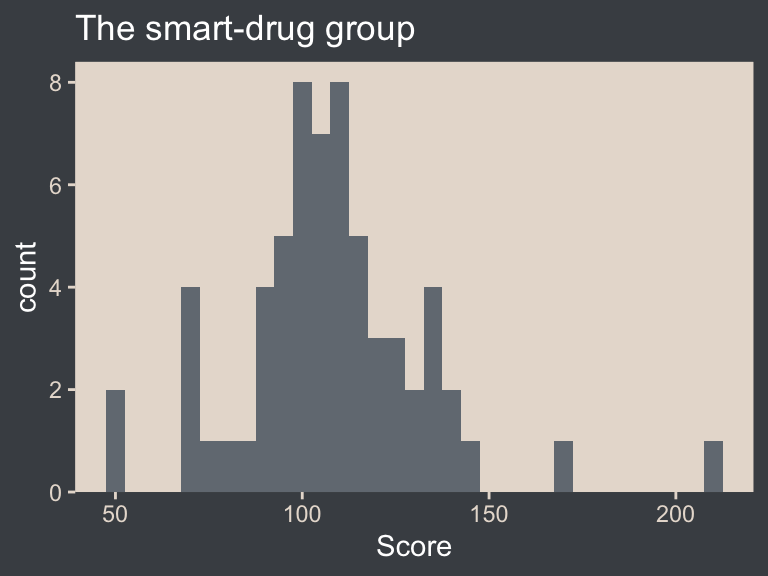
Here are the mean and standard deviation of the Score values.
(mean_y <- mean(my_data$Score))[1] 107.8413(sd_y <- sd(my_data$Score))[1] 25.4452The values of those sample statistics will come in handy in just a bit.
If we want to pass user-defined values into our brm() prior code, we’ll need to define them first in using the brms::stanvar() function.
stanvars <- stanvar(mean_y, name = "mean_y") +
stanvar(sd_y, name = "sd_y")It’s been a while since we used stanvar(), so we should review. Though we’ve saved the object as stanvars, you could name it whatever you want. The main trick is to tell brms about your values with the stanvars argument within brm().
Kruschke mentioned that the “the conventional noncommittal gamma prior [for the precision] has shape and rate constants that are close to zero, such as Sh = 0.01 and R = 0.01” (p. 456). Here’s what that looks like.
tibble(x = seq(from = 0, to = 12, by = 0.025)) |>
mutate(d = dgamma(x, shape = 0.01, rate = 0.01)) |>
ggplot(aes(x = x, y = d)) +
geom_area(fill = bp[3]) +
geom_vline(xintercept = 1 / sd_y^2, color = bp[5], linetype = 2) +
scale_x_continuous(expand = expansion(mult = c(0, 0.05))) +
scale_y_continuous(expand = expansion(mult = c(0, 0.05)), breaks = NULL) +
labs(subtitle = "The brown density in the background is the conventional gamma prior for precision.\nThe yellow vertical line is our precision value.") +
coord_cartesian(xlim = c(0, 8),
ylim = c(0, 0.35))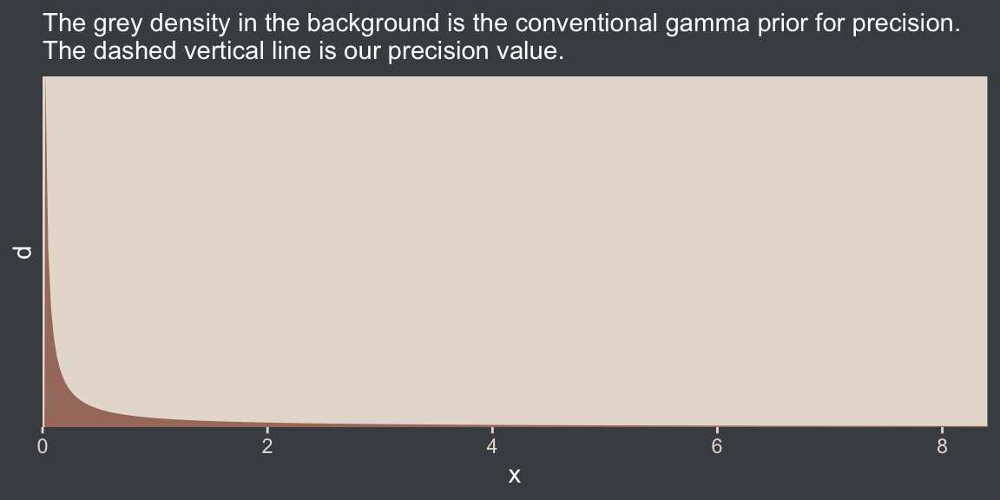
The thing is, with brms we typically estimate \(\sigma\) rather than precision. Though gamma is also a feasible prior distribution for \(\sigma\), we won’t use it here. But we won’t be using Kruschke’s uniform prior, either. The Stan team discourages uniform priors for variance parameters, such as our \(\sigma\). I’m not going to get into the details of why, but you’ve got that hyperlink above and the good old Stan user’s guide (Stan Development Team, 2022) if you’d like to dive deeper.
Here we’ll use the half normal. By “half normal,” we mean that the mean is zero and it’s bounded from zero to positive infinity, which means no negative \(\sigma\) values for us! By the “half normal,” we also mean to suggest that smaller values are more credible than those approaching infinity. When working with unstandardized data, an easy default for a weakly-regularizing half normal is to set the \(\sigma\) hyperparameter (i.e., S) to the standard deviation of the criterion variable (i.e., \(s_Y\)). Here’s what that looks like for this example.
tibble(x = seq(from = 0, to = 110, by = 0.1)) |>
mutate(d = dnorm(x, mean = 0, sd = sd_y)) |>
ggplot(aes(x = x, y = d)) +
geom_area(fill = bp[3]) +
geom_vline(xintercept = sd_y, color = bp[5], linetype = 2) +
scale_x_continuous(expand = expansion(mult = c(0, 0.05))) +
scale_y_continuous(expand = expansion(mult = c(0, 0.05)), breaks = NULL) +
labs(subtitle = "The brown density in the background is the half-normal prior for sigma.\nThe dashed yellow vertical line is our 'sd_y' value.") +
coord_cartesian(xlim = c(0, 100))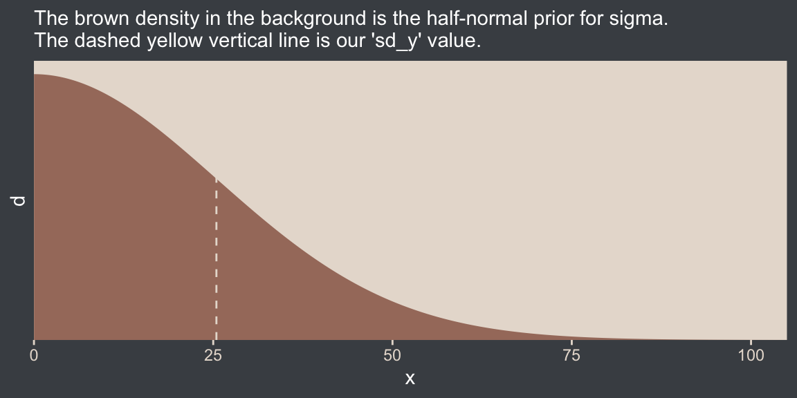
This prior isn’t quite as non-committal as the conventional gamma prior for precision. However, it will discourage the HMC algorithm from exploring \(\sigma\) values much larger than two or three times the standard deviation in the data themselves. In practice, I’ve found it to have a minimal influence on the posterior. If you’d like to make it even less committal, try setting that \(\sigma\) hyperparameter to some multiple of \(s_Y\) like \(2 \times s_Y\) or \(10 \times s_Y\). Compare this to Kruschke’s recommendations for setting a noncommittal uniform prior for \(\sigma\). When using the uniform distribution, \(\operatorname{Uniform}(L, H)\),
we will set the high value \(H\) of the uniform prior on \(\sigma\) to a huge multiple of the standard deviation in the data, and set the low value \(L\) to a tiny fraction of the standard deviation in the data. Again, this means that the prior is vague no matter what the scale of the data happens to be. (p. 455)
On page 456, Kruschke gave an example of such a uniform prior with the code snip dunif( sdY/1000 , sdY*1000 ). Here’s what that would look like with our data.
tibble(x = c(sd_y / 1000, sd_y * 1000)) |>
mutate(d = dunif(x, min = sd_y / 1000, max = sd_y * 1000)) |>
ggplot(aes(x = x, y = d)) +
geom_area(fill = bp[3]) +
geom_vline(xintercept = sd_y, color = bp[5], linetype = 2) +
scale_x_continuous(expand = expansion(mult = c(0, 0.05))) +
scale_y_continuous(expand = expansion(mult = c(0, 0.05)), breaks = NULL) +
labs(subtitle = "The brown density in the background is Kruschke's uniform prior for sigma.\nThe dashed yellow vertical line is our 'sd_y' value.") +
coord_cartesian()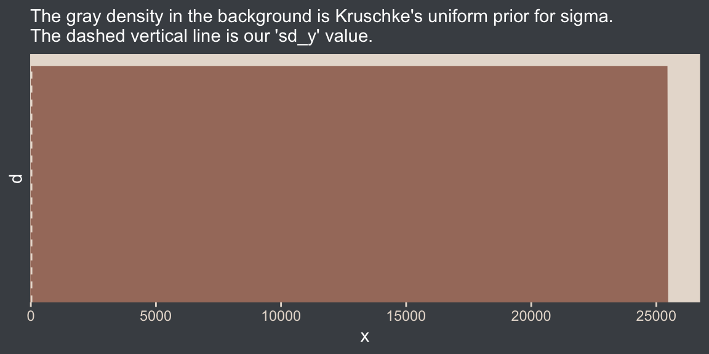
That’s really noncommittal. I’ll stick with my half normal. You do you. Kruschke had this to say about the prior for the mean:
In this application we seek broad priors relative to typical data, so that the priors have minimal influence on the posterior. One way to discover the constants is by asking an expert in the domain being studied. But in lieu of that, we will use the data themselves to tell us what the typical scale of the data is. We will set \(M\) to the mean of the data, and set \(S\) to a huge multiple (e.g., \(100\)) of the standard deviation of the data. This way, no matter what the scale of the data is, the prior will be vague. (p. 455)
In case you’re not following along closely in the text, we often use the normal distribution for the \(\beta\) parameters in a simple regression model. By \(M\) and \(S\), Kruschke was referring to the \(\mu\) and \(\sigma\) parameters of the normal prior for our intercept (\(\beta_0\)). Here’s what that prior looks like in this data example.
tibble(x = seq(from = -10000, to = 10000, by = 10)) |>
mutate(d = dnorm(x, mean = mean_y, sd = sd_y * 100)) |>
ggplot(aes(x = x, y = d)) +
geom_area(fill = bp[3]) +
geom_vline(xintercept = mean_y, color = bp[5], linetype = 2) +
scale_y_continuous(expand = expansion(mult = c(0, 0.05)), breaks = NULL) +
labs(subtitle = "The brown density in the background is the normal prior for mu.\nThe dashed vertical line is our 'mean_y' value.")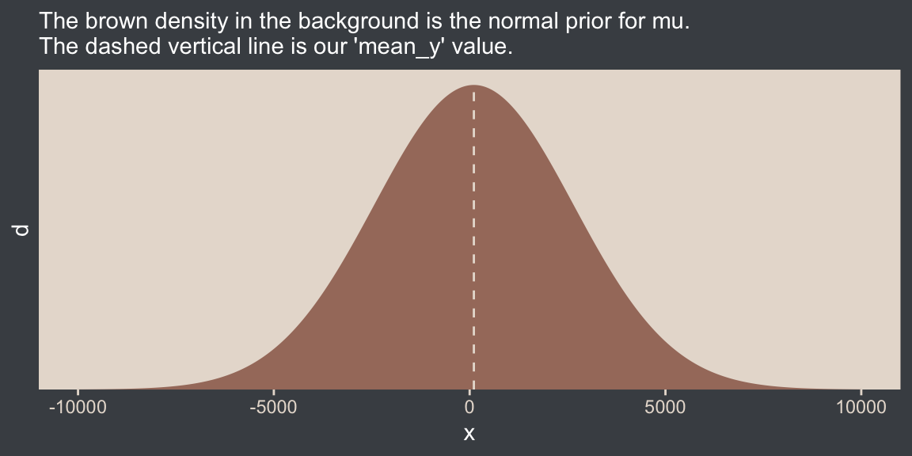
Yep, Kruschke’s right. That is one noncommittal prior given our data. We could tighten that up by an order of magnitude and still have little influence on the posterior. Now we’ve decided on our parameterization (with \(\sigma\), not \(\tau\)) and our priors (half-normal, not uniform or gamma), we are ready to make our version of the model diagram in Figure 16.2.
# Normal density
p1 <- tibble(x = seq(from = -3, to = 3, by = 0.1)) |>
ggplot(aes(x = x, y = (dnorm(x)) / max(dnorm(x)))) +
geom_area(fill = bp[6]) +
annotate(geom = "text",
x = 0, y = 0.2,
label = "normal",
color = bp[5], size = 7) +
annotate(geom = "text",
x = c(0, 1.5), y = 0.6,
label = c("italic(M)", "italic(S)[mu]"),
color = bp[5], family = "Times", parse = TRUE, size = 7) +
scale_x_continuous(expand = c(0, 0)) +
theme_void() +
theme(axis.line.x = element_line(color = bp[4], linewidth = 0.5))
# Half-normal density
p2 <- tibble(x = seq(from = 0, to = 3, by = 0.01),
d = (dnorm(x)) / max(dnorm(x))) |>
ggplot(aes(x = x, y = d)) +
geom_area(fill = bp[6]) +
annotate(geom = "text",
x = 1.5, y = 0.2,
label = "half-normal",
color = bp[5], size = 7) +
annotate(geom = "text",
x = 1.5, y = 0.6,
label = "0*','*~italic(S)[sigma]",
color = bp[5], family = "Times", parse = TRUE, size = 7) +
scale_x_continuous(expand = c(0, 0)) +
theme_void() +
theme(axis.line.x = element_line(color = bp[4], linewidth = 0.5))
## Two annotated arrows
# Save our custom arrow settings
my_arrow <- arrow(angle = 20, length = unit(0.35, "cm"), type = "closed")
p3 <- tibble(x = c(0.43, 1.5),
y = c(1, 1),
xend = c(0.43, 0.8),
yend = c(0.2, 0.2)) |>
ggplot(aes(x = x, xend = xend,
y = y, yend = yend)) +
geom_segment(arrow = my_arrow, color = bp[4]) +
annotate(geom = "text",
x = c(0.3, 1), y = 0.6,
label = "'~'",
color = bp[5], family = "Times", parse = TRUE, size = 10) +
xlim(0, 2) +
theme_void()
# A second normal density
p4 <- tibble(x = seq(from = -3, to = 3, by = 0.1)) |>
ggplot(aes(x = x, y = (dnorm(x)) / max(dnorm(x)))) +
geom_area(fill = bp[6]) +
annotate(geom = "text",
x = 0, y = 0.2,
label = "normal",
color = bp[5], size = 7) +
annotate(geom = "text",
x = c(0, 1.5), y = 0.6,
label = c("mu", "sigma"),
color = bp[5], family = "Times", parse = TRUE, size = 7) +
scale_x_continuous(expand = c(0, 0)) +
theme_void() +
theme(axis.line.x = element_line(color = bp[4], linewidth = 0.5))
# The final annotated arrow
p5 <- tibble(x = c(0.375, 0.625),
y = c(1/3, 1/3),
label = c("'~'", "italic(i)")) |>
ggplot(aes(x = x, y = y, label = label)) +
geom_text(color = bp[5], family = "Times", parse = TRUE, size = c(10, 7)) +
geom_segment(x = 0.5, xend = 0.5,
y = 1, yend = 0,
arrow = my_arrow, color = bp[4]) +
xlim(0, 1) +
theme_void()
# Some text
p6 <- tibble(x = 0.5,
y = 0.5,
label = "italic(y[i])") |>
ggplot(aes(x = x, y = y, label = label)) +
geom_text(color = bp[5], family = "Times", parse = TRUE, size = 7) +
xlim(0, 1) +
theme_void()
# Define the layout
layout <- c(
area(t = 1, b = 2, l = 1, r = 2),
area(t = 1, b = 2, l = 3, r = 4),
area(t = 4, b = 5, l = 1, r = 2),
area(t = 3, b = 4, l = 1, r = 4),
area(t = 6, b = 6, l = 1, r = 2),
area(t = 7, b = 7, l = 1, r = 2))
# Combine and plot!
(p1 + p2 + p4 + p3 + p5 + p6) +
plot_layout(design = layout) &
ylim(0, 1) &
theme(plot.margin = margin(0, 5.5, 0, 5.5)) 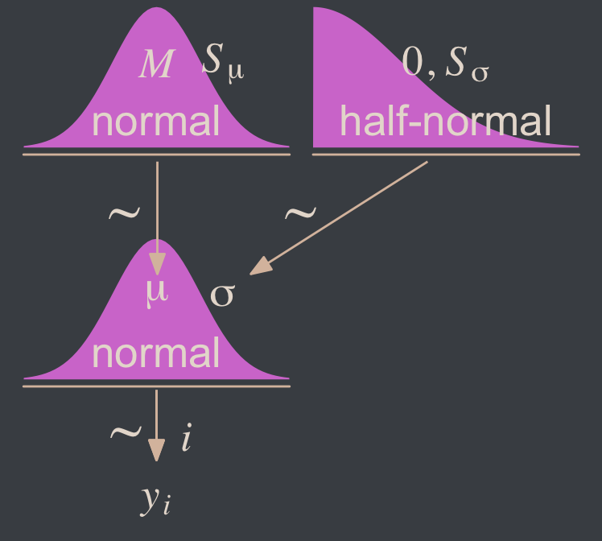
Two things about the notation in our diagram: Because we have two \(\sigma\) hyperparameters, we’ve denoted the one for the prior on \(\mu\) as \(S_\mu\) and the one for the prior on \(\sigma\) as \(S_\sigma\). Also, note that we fixed the \(\mu\) hyperparameter for half-normal prior to zero. This won’t always be the case, but it’s so common within the brms ecosystem that I’m going to express it this way throughout most of this ebook. This is our default.
Here’s how to put these priors to use with brms.
fit16.1 <- brm(
data = my_data,
family = gaussian,
Score ~ 1,
prior = c(prior(normal(mean_y, sd_y * 100), class = Intercept),
prior(normal(0, sd_y), class = sigma)),
chains = 4, cores = 4,
stanvars = stanvars,
seed = 16,
file = "fits/fit16.01")To be more explicit, the stanvars = stanvars argument at the bottom of our code is what allowed us to define our intercept prior as normal(mean_y, sd_y * 100) instead of requiring us to type in the parameters as normal(107.8413, 25.4452 * 100). The same basic point goes for our \(\sigma\) prior.
Also, notice our prior code for \(\sigma\), prior(normal(0, sd_y), class = sigma). Nowhere in there did we actually say we wanted a half normal as opposed to a typical normal. That’s because the brms default is to set the lower bound for priors of class = sigma to zero. There’s no need for us to fiddle with it.
Let’s examine the chains.
plot(fit16.1, widths = 2:3)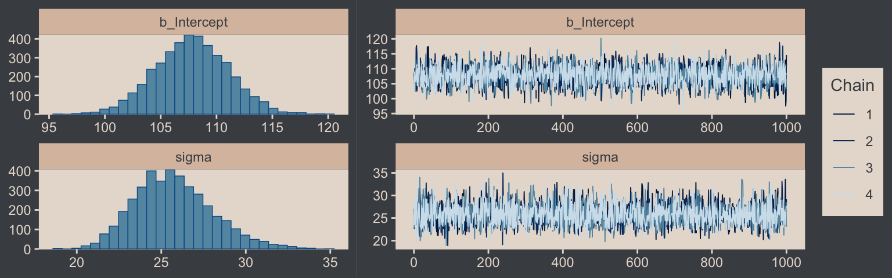
They look good! The model summary looks sensible, too.
print(fit16.1) Family: gaussian
Links: mu = identity
Formula: Score ~ 1
Data: my_data (Number of observations: 63)
Draws: 4 chains, each with iter = 2000; warmup = 1000; thin = 1;
total post-warmup draws = 4000
Regression Coefficients:
Estimate Est.Error l-95% CI u-95% CI Rhat Bulk_ESS Tail_ESS
Intercept 107.79 3.28 101.46 114.27 1.00 3071 2712
Further Distributional Parameters:
Estimate Est.Error l-95% CI u-95% CI Rhat Bulk_ESS Tail_ESS
sigma 25.74 2.31 21.75 30.89 1.00 3636 2673
Draws were sampled using sampling(NUTS). For each parameter, Bulk_ESS
and Tail_ESS are effective sample size measures, and Rhat is the potential
scale reduction factor on split chains (at convergence, Rhat = 1).Compare those values with mean_y and sd_y.
mean_y[1] 107.8413sd_y[1] 25.4452Good times. Let’s extract the posterior draws and save them in a data frame draws.
draws <- as_draws_df(fit16.1)Here’s the leg work required to make our version of the three histograms in Figure 16.3.
# To streamline the code
name_levels <- c("mean", "sd", "es")
name_labels <- c("Mean", "Standard Deviation", "Effect Size")
# We'll use this to mark off the ROPEs as white strips in the background
rope <- tibble(name = factor(name_levels, levels = name_levels, labels = name_labels),
xmin = c(99, 14, -0.1),
xmax = c(101, 16, 0.1))
# Annotate the ROPE
d_text <- tibble(x = 0,
y = 0.98,
label = "ROPE",
name = factor("es", levels = name_levels, labels = name_labels))
# Here are the primary data
draws |>
transmute(mean = b_Intercept,
sd = sigma) |>
mutate(es = (mean - 100) / sd) |>
pivot_longer(cols = everything()) |>
mutate(name = factor(name, levels = name_levels, labels = name_labels)) |>
# The plot
ggplot() +
geom_rect(data = rope,
aes(xmin = xmin, xmax = xmax,
ymin = -Inf, ymax = Inf),
color = "transparent", fill = "white") +
stat_histinterval(aes(x = value),
point_interval = mode_hdi, .width = 0.95,
color = bp[6], fill = bp[2], normalize = "panels") +
geom_text(data = d_text,
aes(x = x, y = y, label = label),
color = bp[4], size = 2.5) +
scale_y_continuous(NULL, breaks = NULL) +
xlab(NULL) +
facet_wrap(~ name, ncol = 3, scales = "free")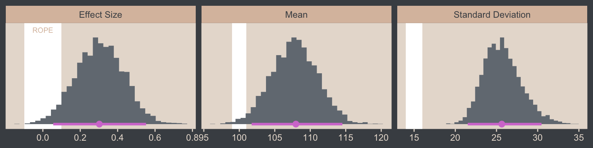
If we wanted those exact modes and 95% HDIs, we might execute this.
draws |>
transmute(mean = b_Intercept,
sd = sigma) |>
mutate(es = (mean - 100) / sd) |>
pivot_longer(cols = everything()) |>
mutate(name = factor(name, levels = name_levels, labels = name_labels)) |>
group_by(name) |>
mode_hdi(value)# A tibble: 3 × 7
name value .lower .upper .width .point .interval
<fct> <dbl> <dbl> <dbl> <dbl> <chr> <chr>
1 Mean 108. 102. 115. 0.95 mode hdi
2 Standard Deviation 25.6 21.5 30.5 0.95 mode hdi
3 Effect Size 0.302 0.0556 0.552 0.95 mode hdi For the next part, we should look at the structure of the posterior draws, draws.
head(draws)# A draws_df: 6 iterations, 1 chains, and 5 variables
b_Intercept sigma Intercept lprior lp__
1 107 27 107 -13 -303
2 110 26 110 -13 -302
3 110 25 110 -13 -303
4 106 25 106 -13 -303
5 109 22 109 -13 -303
6 107 29 107 -13 -303
# ... hidden reserved variables {'.chain', '.iteration', '.draw'}By default, head() returned six rows, each one corresponding to the credible parameter values from a given posterior draw. Following our model equation \(\text{Score}_i \sim N(\mu, \sigma)\), we might reformat the first two columns as:
Score~ \(N\)(107.482, 27.046)Score~ \(N\)(109.533, 25.628)Score~ \(N\)(110.115, 25.046)Score~ \(N\)(105.739, 24.913)Score~ \(N\)(108.667, 22.231)Score~ \(N\)(106.599, 28.803)
Each row of draws yields a full model equation with which we might credibly describe the data–or at least as credibly as we can within the limits of the model. We can give voice to a subset of these credible distributions with our version of the upper right panel of Figure 16.3.
Before I show that plotting code, it might make sense to slow down on the preparatory data wrangling steps. There are several ways to overlay multiple posterior predictive density lines like those in our upcoming plots. We’ll practice a few over the next few chapters. For the method we’ll use in this chapter, it’s handy to first determine how many you’d like. Here we’ll follow Kruschke and choose 63, which we’ll save as n_lines.
# How many credible density lines would you like?
n_lines <- 63Now we’ve got our n_lines value, we’ll use it to subset the rows in draws with the slice() function. We’ll then subset the columns and use expand_grid() to include a sequence of Score values to correspond to the formula implied in each of the remaining rows of draws. Notice how we also kept the .draw index column. That will help us with the plot in a bit. But the main event is how we used Score, b_Intercept, and sigma as the input for the arguments in the dnorm(). The output is a column of the corresponding density values.
long_draws <- draws |>
slice(1:n_lines) |>
select(.draw, b_Intercept, sigma) |>
expand_grid(Score = seq(from = 40, to = 250, by = 1)) |>
mutate(density = dnorm(x = Score, mean = b_Intercept, sd = sigma))
glimpse(long_draws)Rows: 13,293
Columns: 5
$ .draw <int> 1, 1, 1, 1, 1, 1, 1, 1, 1, 1, 1, 1, 1, 1, 1, 1, 1, 1, 1, 1, 1, 1, 1, 1, 1, 1, 1, 1, 1, 1, 1, 1, 1, 1, 1, 1, …
$ b_Intercept <dbl> 107.4819, 107.4819, 107.4819, 107.4819, 107.4819, 107.4819, 107.4819, 107.4819, 107.4819, 107.4819, 107.4819…
$ sigma <dbl> 27.04619, 27.04619, 27.04619, 27.04619, 27.04619, 27.04619, 27.04619, 27.04619, 27.04619, 27.04619, 27.04619…
$ Score <dbl> 40, 41, 42, 43, 44, 45, 46, 47, 48, 49, 50, 51, 52, 53, 54, 55, 56, 57, 58, 59, 60, 61, 62, 63, 64, 65, 66, …
$ density <dbl> 0.0006561302, 0.0007190476, 0.0007869218, 0.0008600264, 0.0009386383, 0.0010230364, 0.0011134999, 0.00121030…We have a rather long data frame after using expand_grid(). We’re ready to plot.
long_draws |>
ggplot(aes(x = Score)) +
geom_histogram(data = my_data,
aes(y = after_stat(density)),
binwidth = 5, boundary = 0,
fill = bp[2], linewidth = 0.2) +
geom_line(aes(y = density, group = .draw),
alpha = 1/3, color = bp[6], linewidth = 1/4) +
scale_x_continuous("y", limits = c(50, 210)) +
scale_y_continuous(NULL, breaks = NULL, expand = expansion(mult = c(0, 0.05))) +
ggtitle("Data with Posterior Predictive Distributions")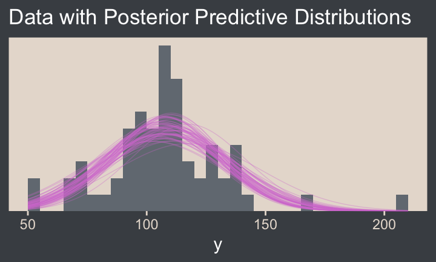
Note the after_stat(density) argument in the geom_histogram() function. That’s what rescaled the histogram to the density metric. If you leave that part out, all the density lines will drop to the bottom of the y axis. Also, did you see how we used .draw to group the density lines within the geom_line() function? That’s why we kept that information. Without that group = .draw argument, the resulting lines are a mess.
Kruschke pointed out this last plot
constitutes a form of posterior-predictive check, by which we check whether the model appears to be a reasonable description of the data. With such a small amount of data, it is difficult to visually assess whether normality is badly violated, but there appears to be a hint that the normal model is straining to accommodate some outliers: The peak of the data protrudes prominently above the normal curves, and there are gaps under the shoulders of the normal curves. (p. 458)
We can perform a similar posterior-predictive check with the brms::pp_check() function. By default, it will return 10 simulated density lines. Like we did above, we’ll increase that by setting the ndraws argument to our n_lines value.
color_scheme_set(scheme = bp[c(3, 1, 2, 5, 4, 6)])
pp_check(fit16.1, ndraws = n_lines)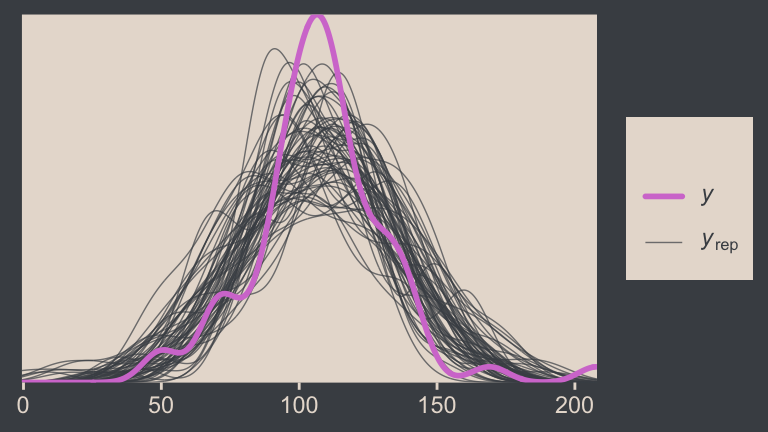
In principle, we didn’t need to load the bayesplot package to use the brms::pp_check() function. But doing so gave us access to the bayesplot::color_scheme_set() function, which allowed us to apply the colors from our color palette to the plot.
Before we move on, we should talk a little about effect sizes, which we all but glossed over in our code.
Effect size is simply the amount of change induced by the treatment relative to the standard deviation: \((\mu - 100) / \sigma\). In other words, the effect size is the “standardized” change… A conventionally “small” effect size in psychological research is \(0.2\) (Cohen, 1988), and the ROPE limits are set at half that size for purposed of illustration. (p. 457, emphasis in the original).
With all due respect to Kruschke, this is not a good definition for the term effect size. Effect sizes constitute a much broader class of statistical expressions than what Kruschke described in the text. This specific kind of effect size is a form of a Cohen’s \(d\) statistic, Cohen’s \(d\) is itself a class of standardized mean differences (SMDs), and SMDs are themselves only a subset of many many more kinds of effect sizes. In addition to the seminal work by Cohen, I recommend Kelley and Preacher’s (2012) On effect size. I’ll also have a lot more to say about effect sizes in the bonus section, Section 16.5.2
As to the specific effect size \((\mu - 100) / \sigma\), those not familiar with IQ tests should understand that popular IQ tests like the WAIS and WJ are specifically designed to have an overall population mean of 100, and standard deviation of 15. When Kruschke defined his SMD effect size with \(\mu - 100\) in the numerator of the formula, he was comparing the population mean of the data to the overall population mean of the test. It isn’t often the case that one has a known population mean for such a comparison, but it’s very handy when one does. Also note that in this case, Kruschke decided to use the population estimate from the sample \(\sigma\) in the denominator. Another option, and arguably a better one, would have been to use the known population value of 15 instead. Here’s what that would look like compared to the effect size above.
name_labels <- c("(mu-100)/sigma", "(mu-100)/15")
draws |>
transmute(mean = b_Intercept,
sd = sigma) |>
mutate(es_1 = (mean - 100) / sd,
es_2 = (mean - 100) / 15) |>
pivot_longer(cols = es_1:es_2) |>
mutate(name = factor(name, levels = str_c("es_", 1:2), labels = name_labels)) |>
# The plot
ggplot(aes(x = value, y = name)) +
stat_histinterval(point_interval = mode_hdi, .width = 0.95,
color = bp[6], fill = bp[2], normalize = "panels") +
scale_y_discrete(NULL, labels = ggplot2:::parse_safe, expand = expansion(mult = 0.1)) +
xlab(expression("Effect Size (i.e., Cohen's "*italic(d)*")"))
When one computes an SMD effect size, the choice of standardizer matters. Generally, one chooses a standardizer based on disciplinary norms, theoretical considerations, and any other factors that might effect how well a given target audience will understand the information. Science is difficult, statistics are difficult, and it turns out science communication is difficult, too.
16.2 Outliers and robust estimation: The \(t\) distribution
Here’s the code for our version of Figure 16.4, where we visualize several versions of the \(t\) distribution.
# Wrangle
crossing(nu = c(Inf, 4, 2, 1),
y = seq(from = -8, to = 8, length.out = 500)) |>
mutate(density = dt(x = y, df = nu)) |>
# This line is unnecessary, but will help with the plot legend
mutate(nu = factor(nu, levels = c("Inf", "4", "2", "1"))) |>
# Plot
ggplot(aes(x = y, y = density, group = nu, color = nu)) +
geom_line() +
scale_y_continuous(expression(p(y)), expand = expansion(mult = c(0, 0.05))) +
scale_color_manual(expression(paste(italic(t)[nu])), values = bp[c(6, 3:1)]) +
guides(colour = guide_legend(position = "inside")) +
coord_cartesian(xlim = c(-6, 6)) +
theme(legend.position.inside = c(0.92, 0.75))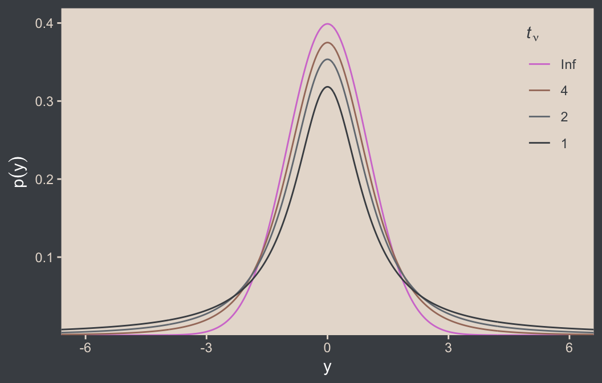
Although the \(t\) distribution is usually conceived as a sampling distribution for the NHST \(t\) test, we will use it instead as a convenient descriptive model of data with outliers… Outliers are simply data values that fall unusually far from a model’s expected value. Real data often contain outliers relative to a normal distribution. Sometimes the anomalous values can be attributed to extraneous influences that can be explicitly identified, in which case the affected data values can be corrected or removed. But usually we have no way of knowing whether a suspected outlying value was caused by an extraneous influence, or is a genuine representation of the target being measured. Instead of deleting suspected outliers from the data according to some arbitrary criterion, we retain all the data but use a noise distribution that is less affected by outliers than is the normal distribution. (p. 459)
Here’s Figure 16.5.a. Note that since we’d like to work with the \(t\) distribution, we specified dstudent_t() function in one of the geom_area() lines. The dstudent_t() function is from brms, and it gives us access to the scaled \(t\) distribution. Base functions such as dt() use the \(t\) distribution for which the location \(\mu\) is fixed to zero and the scale \(\tau\) is fixed to 1, making it the \(t\)-distribution version of the standardized normal distribution. To go beyond those defaults, we need a scaled and/or shifted \(t\) distribution. For more information, execute ?dstudent_t.
tibble(y = seq(from = -10, to = 20, length.out = 501)) |>
ggplot(aes(x = y)) +
geom_area(aes(y = dnorm(y, mean = 2.5, sd = 5.73)),
alpha = 1/2, fill = bp[2]) +
geom_area(aes(y = dstudent_t(y, df = 1.14, mu = 0.12, sigma = 1.47)),
alpha = 1/2, fill = bp[2]) +
geom_vline(xintercept = c(0.12, 2.5), color = bp[5], linetype = 3) +
annotate(geom = "point",
x = c(-2:2, 15), y = 0.002,
color = bp[6], size = 2) +
annotate(geom = "text",
x = c(1, 4), y = c(0.2, 0.08),
label = c("italic(t)", "italic(N)"),
color = bp[1], parse = TRUE) +
scale_y_continuous(expression(italic(p)(y)), expand = expansion(mult = c(0, 0.05))) +
ggtitle("Maximum Likelihood Estimates") +
coord_cartesian(xlim = c(-5, 15))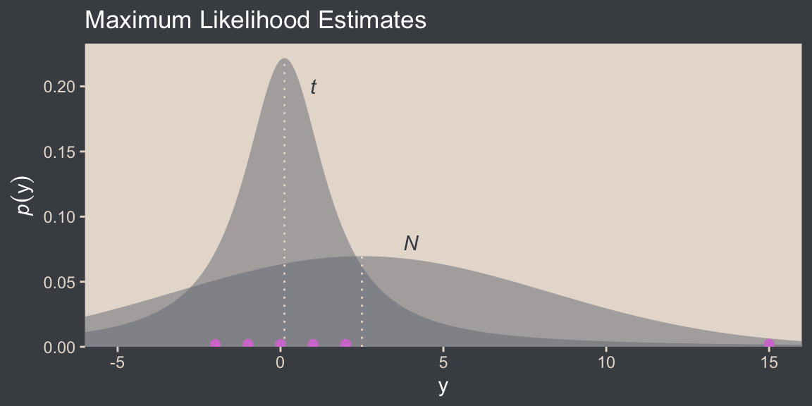
I do not believe the data for Figure 16.5 are available directly from Kruschke’s supplemental files for the text. However, the caption from the figure indicates they were from Holcomb & Spalsbury (2005). The data can be downloaded directly from https://jse.amstat.org/datasets/calcium.dat.txt, and you can find additional documentation from this link (just use the search term “Holcomb”).
# Define the column names
col_names <- c("obsno", "age", "sex", "alkphos", "lab", "cammol", "phosmmol", "age_group")
# Extract the data from online
d <- read_table(
# The url was working for direct download on April 12, 2025
file = url("https://jse.amstat.org/datasets/calcium.dat.txt"),
col_names = col_names) |>
# Save these variables as factors
mutate(sex = factor(sex, levels = 1:2, labels = c("male", "female")),
lab = factor(lab, levels = 1:6, labels = c("Metpath", "Deyor", "St. Elizabeth's", "CB Rouche", "YOH", "Horizon")),
age_group = factor(age_group, levels = 1:5, labels = c("65-69", "70-74", "75-79", "80-84", "85-89")))
glimpse(d)Rows: 178
Columns: 8
$ obsno <dbl> 1, 2, 3, 4, 5, 6, 7, 8, 9, 10, 11, 12, 13, 14, 15, 16, 17, 18, 19, 20, 21, 22, 23, 24, 25, 26, 27, 28, 29, 30,…
$ age <dbl> 78, 72, 72, 73, 73, 73, 65, 68, 89, 84, 771, 80, 80, 76, 70, 70, 71, 70, 70, 66, 76, 76, 68, 69, 76, 70, 71, 7…
$ sex <fct> female, female, female, female, female, female, female, female, male, male, male, female, female, female, fema…
$ alkphos <dbl> 83, 117, 132, 102, 114, 88, 213, 153, 86, 108, 96, 58, 45, 73, 91, 57, 159, 52, 67, 111, 84, 5, 82, 84, 100, 9…
$ lab <fct> CB Rouche, CB Rouche, CB Rouche, CB Rouche, CB Rouche, NA, CB Rouche, CB Rouche, CB Rouche, CB Rouche, CB Rouc…
$ cammol <dbl> 2.53, 2.50, 2.43, 2.48, 2.33, 2.13, 2.55, 2.45, 2.25, 2.43, 2.40, 2.25, 2.18, 2.55, 2.38, 2.30, 2.60, 2.20, 2.…
$ phosmmol <dbl> 1.07, 1.16, 1.13, 0.81, 1.13, 0.84, 1.26, 1.23, 0.65, 0.84, 1.10, 1.10, 1.49, 1.23, 1.42, 1.16, 1.32, 1.07, 1.…
$ age_group <fct> 75-79, 70-74, 70-74, 70-74, 70-74, 70-74, 65-69, 65-69, 85-89, 80-84, 70-74, 80-84, 80-84, 75-79, 70-74, 70-74…For the figure, our focal variable will be phosmmol
d |>
drop_na(phosmmol) |>
ggplot(aes(x = phosmmol)) +
geom_histogram(aes(y = after_stat(density)),
binwidth = 0.1, fill = bp[3], linewidth = 0.2) +
stat_function(fun = dnorm, args = list(mean = 1.16, sd = 0.63),
color = bp[2], n = 501, xlim = c(-2.3, 10.3)) +
stat_function(fun = dstudent_t, args = list(df = 2.63, mu = 1.11, sigma = 0.15),
color = bp[2], n = 501, xlim = c(-2.3, 10.3)) +
annotate(geom = "text",
x = c(1.5, 1.9), y = c(1.5, 0.6),
label = c("italic(t)", "italic(N)"),
color = bp[1], parse = TRUE) +
scale_x_continuous(breaks = -1:5 * 2, expand = expansion(mult = 0)) +
scale_y_continuous(expression(italic(p)(phosmmol)), expand = expansion(mult = c(0, 0.05))) +
ggtitle("Maximum Likelihood Estimates")We learn more details about the Student-\(t\) scale parameter \(\sigma\) and its relation to the standard deviation:
It is important to understand that the scale parameter \(\sigma\) in the \(t\) distribution is not the standard deviation of the distribution. (Recall that the standard deviation is the square root of the variance, which is the expected value of the squared deviation from the mean, as defined back in Equation 4.8, p. 86.) The standard deviation is actually larger than \(\sigma\) because of the heavy tails… While this value of the scale parameter is not the standard deviation of the distribution, it does have an intuitive relation to the spread of the data. Just as the range \(\pm \sigma\) covers the middle \(68\%\) of a normal distribution, the range \(\pm \sigma\) covers the middle \(58\%\) of a \(t\) distribution when \(\nu = 2\), and the middle \(50\%\) when \(\nu = 1\). These areas are illustrated in the left column of Figure 16.6. The right column of Figure 16.6 shows the width under the middle of a \(t\) distribution that is needed to span \(68.27\%\) of the distribution, which is the area under a normal distribution for \(\sigma = \pm 1\). (pp. 459–461, emphasis in the original)
For example, in the lower panel of Kruschke’s Figure 16.5, \(\nu = 2.63\) and \(\sigma = 0.15\). Because \(\nu > 2\), the standard deviation is defined and finite, and we can compute the standard deviation like so:
# Figure 16.5 (lower panel)
nu <- 2.63
sigma <- 0.15
sigma * sqrt(nu / (nu - 2))[1] 0.3064777But because \(\nu = 1.14\) for the upper panel in Kruschke’s Figure 16.5, we run into trouble.
# Figure 16.5 (upper panel)
nu <- 1.14
sigma <- 1.47
sigma * sqrt(nu / (nu - 2))Warning in sqrt(nu/(nu - 2)): NaNs produced[1] NaNThe trouble arises from the sqrt(nu / (nu - 2)) portion of the computation. Because nu / (nu - 2) returns a negative value (-1.3), we end up with an imaginary number, which isn’t great from a computational standpoint. But anyways, for \(t\) distributions for which \(\nu > 2\), the standard deviation follows the formula
\[\textit{SD} = \sigma \sqrt{\nu / (\nu - 2)}.\]
This will all become important later. For now, here’s the code for the left column for Figure 16.6.
# Save a vector
nu <- c(Inf, 5, 2, 1)
# The primary data
d <- crossing(y = seq(from = -8, to = 8, length.out = 1e3),
nu = nu) |>
mutate(density = dt(y, df = nu),
strip = fct_rev(str_c("nu==", nu)))
# For annotation
d_text <- tibble(y = 0,
nu = nu) |>
mutate(p = pt(1, df = nu) - pt(-1, df = nu)) |>
mutate(label = str_c(round(100 * p, digits = 0), "%"),
strip = fct_rev(str_c("nu==", nu)))
# The subplot
p1 <- d |>
ggplot(aes(x = y)) +
geom_area(aes(y = density),
fill = bp[2]) +
geom_area(data = d |> filter(y >= -1 & y <= 1),
aes(y = density),
fill = bp[1]) +
# Note how this function has its own data
geom_text(data = d_text,
aes(y = 0.175, label = label),
color = "white") +
scale_y_continuous(expression(italic(p)(y)), breaks = c(0, 0.2, 0.4),
expand = expansion(mult = c(0, 0.05))) +
coord_cartesian(xlim = c(-6, 6)) +
facet_grid(strip ~ "Shaded~from~italic(y)==-1~to~italic(y)==1", labeller = label_parsed) +
theme(strip.text.y = element_blank())Here’s the code for the right column.
# Save a constant for the area under the curve (AUC)
auc <- (pt(1, df = Inf) - pt(-1, df = Inf))
# The primary data
d <- tibble(nu = nu,
ymin = qt((1 - auc) / 2, df = nu)) |>
mutate(ymax = -ymin) |>
expand_grid(y = seq(from = -8, to = 8, length.out = 1e3)) |>
mutate(density = dt(y, df = nu),
strip = fct_rev(str_c("nu==", nu)))
# The subplot
p2 <- d |>
ggplot(aes(x = y)) +
geom_area(aes(y = density),
fill = bp[2]) +
geom_area(data = d |>
# Notice the `filter()` code has changed
filter(y >= ymin & y <= ymax),
aes(y = density),
fill = bp[1]) +
annotate(geom = "text",
x = 0, y = 0.175,
label = "68%", color = "white") +
scale_y_continuous(NULL, breaks = NULL, expand = expansion(mult = c(0, 0.05))) +
coord_cartesian(xlim = c(-6, 6)) +
facet_grid(strip ~ "'Shaded for the middle 68.27%'", labeller = label_parsed)Now we bind the two ggplots together with the patchwork package to make the full version of Figure 16.6.
p1 + p2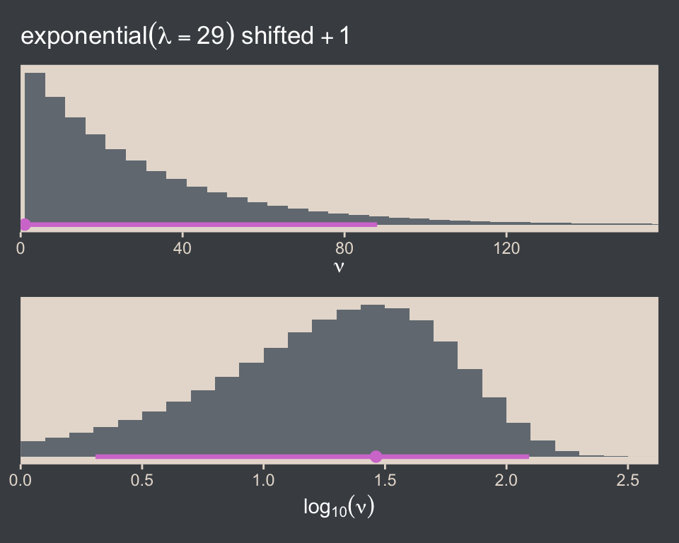
The use of a heavy-tailed distribution is often called robust estimation because the estimated value of the central tendency is stable, that is, “robust,” against outliers. The \(t\) distribution is useful as a likelihood function for modeling outliers at the level of observed data. But the \(t\) distribution is also useful for modeling outliers at higher levels in a hierarchical prior. We will encounter several applications. (p. 462, emphasis in the original)
16.2.1 Using the \(t\) distribution in JAGS brms
It’s easy to use Student’s \(t\) in brms. Just make sure to set family = student. By default, brms already sets the lower bound for \(\nu\) to 1. But we do still need to use 1/29. To get a sense, let’s simulate exponential data using the rexp() function. Like Kruschke covered in the text (p. 462), the rexp() function has one parameter, rate, which is the reciprocal of the mean. Here we’ll set the mean to 29.
n_draws <- 1e7
mu <- 29
set.seed(16)
tibble(y = rexp(n = n_draws, rate = 1 / mu)) |>
mutate(y_at_least_1 = ifelse(y < 1, NA, y)) |>
pivot_longer(cols = everything()) |>
group_by(name) |>
summarise(mean = mean(value, na.rm = TRUE))# A tibble: 2 × 2
name mean
<chr> <dbl>
1 y 29.0
2 y_at_least_1 30.0The simulation showed that when we define the exponential rate as 1/29 and use the typical boundary at 0, the mean of our samples converges to 29. But when we only consider the samples of 1 or greater, the mean converges to 30. Thus, our \(\operatorname{Exponential}(1/29)\) prior with a boundary at 1 is how we get a shifted exponential distribution when we use it as our prior for \(\nu\) in brms. Just make sure to remember that if you want the mean to be 30, you’ll need to specify the rate of 1/29.
Also, Stan will bark if you simply try to set that exponential prior with the code prior(exponential(1/29), class = nu):
DIAGNOSTIC(S) FROM PARSER: Info: integer division implicitly rounds to integer. Found int division: 1 / 29 Positive values rounded down, negative values rounded up or down in platform-dependent way.
To avoid this, just do the division beforehand and save the results with stanvar().3
stanvars <- stanvar(mean_y, name = "mean_y") +
stanvar(sd_y, name = "sd_y") +
stanvar(1/29, name = "one_over_twentynine")Here’s the brm() code. Note that we set the prior for our new \(\nu\) parameter by specifying class = nu within the last prior() line. Also keep in mind here that whereas Kruschke’s JAGS code parameterized dt() in terms of inverse scale, brms parameterizes the \(t\) distribution in terms of scale, just like it parameterizes the normal distribution in terms of scale.4
fit16.2 <- brm(
data = my_data,
family = student,
Score ~ 1,
prior = c(prior(normal(mean_y, sd_y * 100), class = Intercept),
prior(normal(0, sd_y), class = sigma),
prior(exponential(one_over_twentynine), class = nu)),
chains = 4, cores = 4,
stanvars = stanvars,
seed = 16,
file = "fits/fit16.02")We can make the shifted exponential distribution (i.e., Figure 16.7) with simple addition.
# How many draws would you like?
n_draws <- 1e6
# Here are the data
d <- tibble(exp = rexp(n_draws, rate = 1/29)) |>
transmute(exp_plus_1 = exp + 1,
log_10_exp_plus_1 = log10(exp + 1))
# This is the plot in the top panel
p1 <- d |>
ggplot(aes(x = exp_plus_1)) +
geom_histogram(binwidth = 5, boundary = 1,
fill = bp[2], linewidth = 0.2, ) +
stat_pointinterval(aes(y = 0),
point_interval = mode_hdi, .width = 0.95, color = bp[6]) +
scale_y_continuous(NULL, breaks = NULL) +
labs(x = expression(nu),
title = expression(exponential(lambda==29)~shifted~+1)) +
coord_cartesian(xlim = c(0, 150))
# The bottom panel plot
p2 <- d |>
ggplot(aes(x = log_10_exp_plus_1)) +
geom_histogram(binwidth = 0.1, boundary = 0,
fill = bp[2], linewidth = 0.2) +
stat_pointinterval(aes(y = 0),
point_interval = mode_hdi, .width = 0.95, color = bp[6]) +
scale_y_continuous(NULL, breaks = NULL) +
xlab(expression(log[10](nu))) +
coord_cartesian(xlim = c(0, 2.5))
# Combine, adjust, and display
(p1 / p2) & scale_x_continuous(expand = expansion(mult = c(0, 0.05)))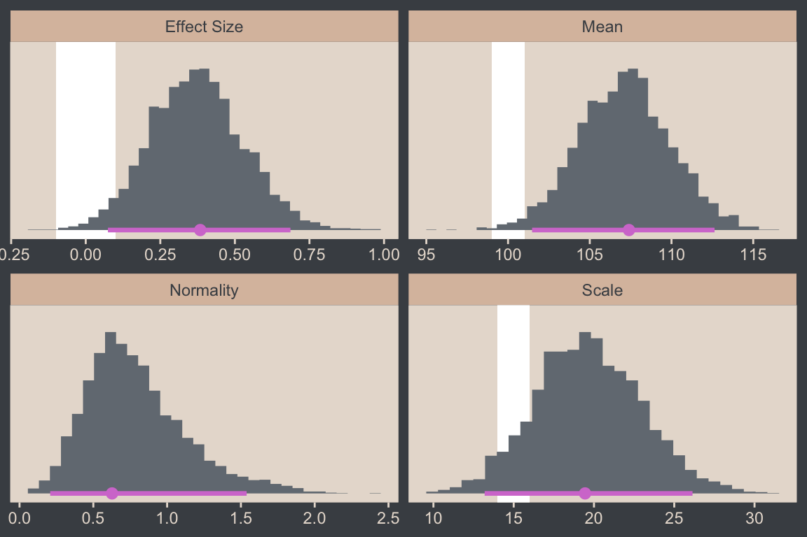
Kruschke wrote:
It should be emphasized that this choice of prior for \(\nu\) is not uniquely “correct.” While it is well motivated and has reasonable operational characteristics in many applications, there may be situations in which you would want to put more or less prior mass on small values of \(\nu\).
We might use parse_dist() to compare it to the brms default gamma(2, 0.1).
c(prior(gamma(2, 0.1), lb = 1), # brms default
prior(exponential(0.03448276), lb = 1)) |> # 1/29 is about 0.03448276
parse_dist() |>
ggplot(aes(y = prior, dist = .dist_obj)) +
stat_halfeye(point_interval = mode_hdi, .width = 0.95,
color = bp[6], fill = bp[2]) +
scale_x_continuous(expression(nu), breaks = c(1, 40, 80, 120)) +
scale_y_discrete(NULL, expand = expansion(mult = 0.1)) +
coord_cartesian(xlim = c(0, 125))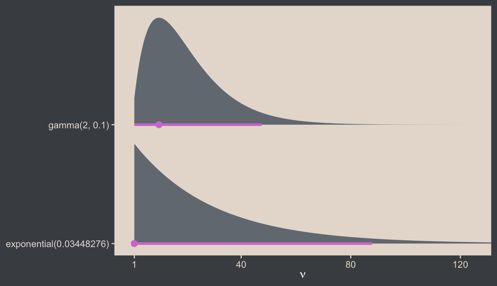
You can get some background on the brms default in the Stan wiki, and we’ll have more to say about \(\nu\) priors a bit. For now, here is a version of the scatter plots of Figure 16.8.
pairs(fit16.2,
off_diag_args = list(alpha = 1/3, size = 1/3),
transformations = list(nu = "log10"))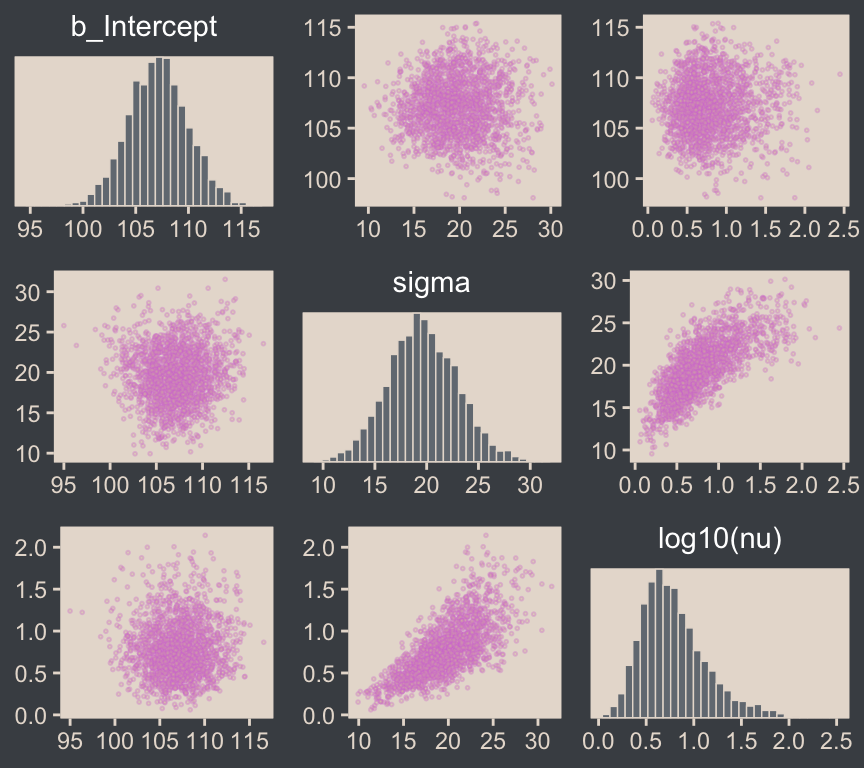
For brmsfit objects, the pairs() function is a wrapper around the mcmc_pairs() function from the bayesplot package. The transformations argument from mcmc_pairs() allows one to transform one or more parameters with named functions.5
If you want a finer level of control for the plots, you can always start by pulling the posterior draws with as_draws_df() and then making the plot yourself with ggplot2.
draws <- as_draws_df(fit16.2)
draws |>
mutate(`log10(nu)` = log10(nu)) |>
rename(mu = b_Intercept) |>
select(mu, sigma, `log10(nu)`) |>
pivot_longer(cols = -`log10(nu)`) |>
ggplot(aes(x = `log10(nu)`, y = value)) +
geom_point(alpha = 1/3, color = bp[6], size = 1/3) +
labs(x = expression(log[10](nu)),
y = NULL) +
facet_grid(name ~ ., labeller = label_parsed, scales = "free", switch = "y") +
theme(strip.background = element_rect(fill = "transparent"),
strip.placement = "outside",
strip.text = element_text(color = beyonce_palette(126)[5], size = 12))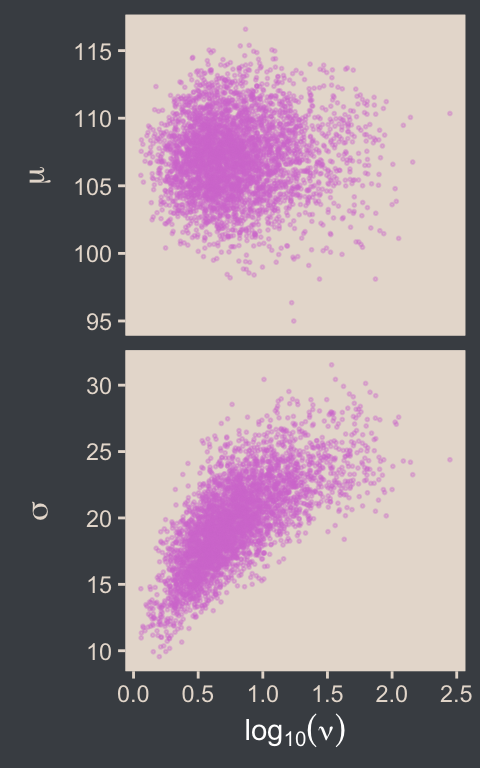
As we’ll later see in Section 18.1.3, we can make plots even closer to Kruschke’s Figure 16.8 with help from the GGally package. For now, you can use base R cor() function if you want the Pearson’s correlation coefficients.
draws |>
mutate(`log10(nu)` = log10(nu)) |>
select(b_Intercept, sigma, `log10(nu)`) |>
cor() |>
round(digits = 3) b_Intercept sigma log10(nu)
b_Intercept 1.000 0.021 0.033
sigma 0.021 1.000 0.721
log10(nu) 0.033 0.721 1.000The correlations among our parameters are similar in magnitude to those Kruschke presented in the text. Here are four of the panels for Figure 16.9.
# To streamline the code
name_levels <- c("mean", "scale", "df", "es")
name_labels <- c("Mean", "Scale", "log(Normality)", "(mu-100)/sigma")
# We'll use this to mark off the ROPEs as white strips in the background
rope <- tibble(
name = factor(name_levels[-3], levels = name_levels, labels = name_labels),
xmin = c(99, 14, -0.1),
xmax = c(101, 16, 0.1))
# Here are the primary data
draws |>
transmute(mean = b_Intercept,
scale = sigma,
df = log10(nu)) |>
mutate(es = (mean - 100) / scale) |>
pivot_longer(cols = everything()) |>
mutate(name = factor(name, levels = name_levels, labels = name_labels)) |>
# Plot
ggplot() +
geom_rect(data = rope,
aes(xmin = xmin, xmax = xmax,
ymin = -Inf, ymax = Inf),
color = "transparent", fill = "white") +
stat_histinterval(aes(x = value, y = 0),
point_interval = mode_hdi, .width = 0.95,
color = bp[6], fill = bp[2],
normalize = "panels") +
scale_y_continuous(NULL, breaks = NULL) +
xlab(NULL) +
facet_wrap(~ name, labeller = label_parsed, ncol = 2, scales = "free")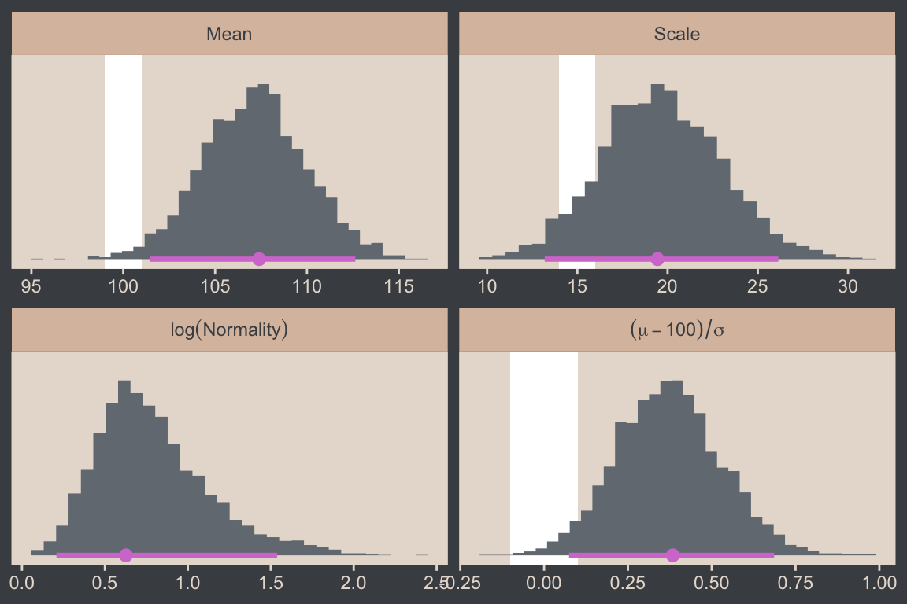
As we discussed toward the end of Section 16.1.2, the language of effect size is a little vague, here. In Kruschke’s version of the figure, he clarified in his x-axis label the formula was \((\mu - 100) / \sigma\), which is a version of Cohen’s \(d\) SMD applied to IQ data. The IQ-data part is important, because we know that 100 is the population mean for IQ test scores, and should not be confused as a part of the equation you’d use in other contexts. Another issue here is when Kruschke used this same formula in the context of the Gaussian model we fit in Section 16.1.2, the \(\sigma\) part was the same as the standard deviation parameter from the model. However, the \(\sigma\) is not the same as the standard deviation in the context of a \(t\) model. Rather, in this case, \(\sigma\) is the scale parameter, and it’s not entirely clear what it would mean to standardize a mean difference with a Student-\(t\) scale. We’ll explore this issue later in Section 16.5. For now, we’ll set the stage by comparing Kruschke’s \((\mu - 100) / \sigma\) with \((\mu - 100) / 15\), where we replace the Student-\(t\) scale parameter with the population standard deviation for IQ test scores: 15.
name_labels <- c("(mu-100)/sigma", "(mu-100)/15")
draws |>
transmute(mean = b_Intercept,
scale = sigma) |>
mutate(es_1 = (mean - 100) / scale,
es_2 = (mean - 100) / 15) |>
pivot_longer(cols = es_1:es_2) |>
mutate(name = factor(name, levels = str_c("es_", 1:2), labels = name_labels)) |>
# The plot
ggplot(aes(x = value, y = name)) +
stat_histinterval(point_interval = mode_hdi, .width = 0.95,
color = bp[6], fill = bp[2], normalize = "panels") +
scale_y_discrete(NULL, labels = ggplot2:::parse_safe, expand = expansion(mult = 0.1)) +
xlab(expression("Cohen's-"*italic(d)*" effect size variant"))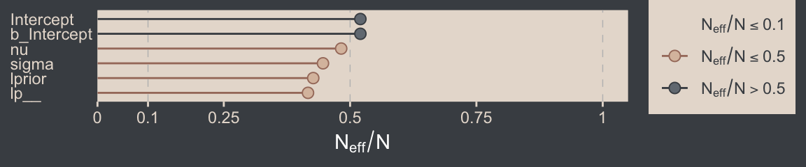
For the final panel of Figure 16.9, we’ll make our \(t\) lines in much the same way we did, earlier. But last time, we just took the first \(\mu\) and \(\sigma\) values from the first 63 rows of the post tibble. This time we’ll use dplyr::slice_sample() to take random draws from the post rows instead. We tell slice_sample() how many draws we’d like with the n argument.
In addition to the change in our row selection strategy, this time we’ll slightly amend the code within the last mutate() line. Since we’d like to work with the \(t\) distribution, we specified dstudent_t() function in place of dnorm().
# How many credible density lines would you like?
n_lines <- 63
# Setting the seed makes the results from `slice_sample()` reproducible
set.seed(16)
# Wrangle
draws |>
slice_sample(n = n_lines) |>
expand_grid(Score = seq(from = 40, to = 250, by = 1)) |>
mutate(density = dstudent_t(x = Score, df = nu, mu = b_Intercept, sigma = sigma)) |>
# Plot
ggplot(aes(x = Score)) +
geom_histogram(data = my_data,
aes(y = after_stat(density)),
binwidth = 5, boundary = 0,
fill = bp[2], linewidth = 0.2) +
geom_line(aes(y = density, group = .draw),
alpha = 1/3, color = bp[6], linewidth = 1/3) +
scale_y_continuous(NULL, breaks = NULL, expand = expansion(mult = c(0, 0.05))) +
labs(x = "y",
title = "Data with Posterior Predictive Distributions") +
coord_cartesian(xlim = c(50, 210))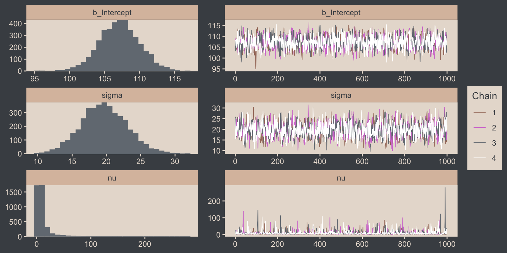
Much like Kruschke mused in the text, this plot
shows that the posterior predictive \(t\) distributions appear to describe the data better than the normal distribution in Figure 16.3, insofar as the data histogram does not poke out at the mode and the gaps under the shoulders are smaller. (p. 464)
In case you were wondering, here’s the model summary().
summary(fit16.2) Family: student
Links: mu = identity
Formula: Score ~ 1
Data: my_data (Number of observations: 63)
Draws: 4 chains, each with iter = 2000; warmup = 1000; thin = 1;
total post-warmup draws = 4000
Regression Coefficients:
Estimate Est.Error l-95% CI u-95% CI Rhat Bulk_ESS Tail_ESS
Intercept 107.12 2.82 101.53 112.69 1.00 2226 2081
Further Distributional Parameters:
Estimate Est.Error l-95% CI u-95% CI Rhat Bulk_ESS Tail_ESS
sigma 19.64 3.33 13.33 26.35 1.00 1912 1785
nu 9.11 12.26 1.84 43.78 1.00 1929 2116
Draws were sampled using sampling(NUTS). For each parameter, Bulk_ESS
and Tail_ESS are effective sample size measures, and Rhat is the potential
scale reduction factor on split chains (at convergence, Rhat = 1).It’s easy to miss how
\(\sigma\) in the robust estimate is much smaller than in the normal estimate. What we had interpreted as increased standard deviation induced by the smart drug might be better described as increased outliers. Both of these differences, that is, \(\mu\) more tightly estimated and \(\sigma\) smaller in magnitude, are a result of there being outliers in the data. The only way a normal distribution can accommodate the outliers is to use a large value for \(\sigma\). In turn, that leads to “slop” in the estimate of \(\mu\) because there is a wider range of \(\mu\) values that reasonably fit the data when the standard deviation is large. (p. 464)
We can use the brms::VarCorr() function to pull the summary statistics for \(\sigma\) from both models. For more convenient output, we nest those calls within rbind().
rbind(VarCorr(fit16.1)$residual__$sd, # Gaussian, larger scale
VarCorr(fit16.2)$residual__$sd) # Robust t, smaller scale Estimate Est.Error Q2.5 Q97.5
25.74096 2.308776 21.75037 30.89217
19.64420 3.325958 13.32603 26.34786It is indeed the case that estimate for \(\sigma\) is smaller in the \(t\) model. That smaller \(\sigma\) resulted in a more precise estimate for \(\mu\), as can be seen in the ‘Est.Error’ columns from the fixef() output.
rbind(fixef(fit16.1), # Gaussian, less precise mu
fixef(fit16.2)) # Robust t, more precise mu Estimate Est.Error Q2.5 Q97.5
Intercept 107.7866 3.275494 101.4619 114.2670
Intercept 107.1201 2.816808 101.5338 112.6862Here that is in a coefficient plot using tidybayes::stat_interval().
bind_rows(as_draws_df(fit16.1), as_draws_df(fit16.2)) |>
select(b_Intercept) |>
mutate(fit = rep(c("fit16.1", "fit16.2"), each = n() / 2)) |>
ggplot(aes(x = b_Intercept, y = fit)) +
stat_interval(point_interval = mode_hdi, .width = c(0.5, 0.8, 0.95)) +
scale_color_manual("HDI", values = c(bp[c(4, 3, 1)]),
labels = c("95%", "80%", "50%")) +
labs(x = expression(mu),
y = NULL) +
theme(legend.key.size = unit(0.45, "cm"))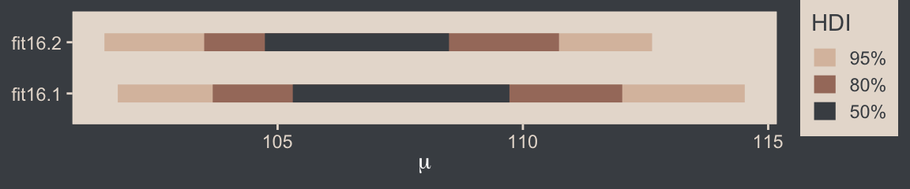
16.2.2 Using the \(t\) distribution in Stan
Kruschke expressed concern about high autocorrelations in the chains of his JAGS model. Here are the results of our Stan/brms attempt.
# Rearrange the bayesplot color scheme
color_scheme_set(scheme = bp[c(6, 2, 2, 2, 1, 2)])
draws |>
mutate(chain = .chain) |>
mcmc_acf(pars = vars(b_Intercept:nu), lags = 35)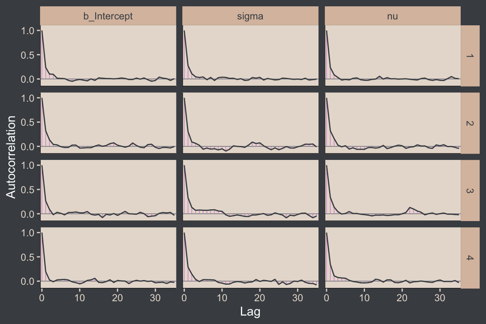
For all three parameters, the autocorrelations were near zero by lag 3 or 4. Not bad. The \(N_\textit{eff}/N\) ratios are okay.
# Rearrange the bayesplot color scheme again
color_scheme_set(scheme = bp[c(2:1, 4:3, 5:6)])
neff_ratio(fit16.2) |>
mcmc_neff(size = 2.5) +
yaxis_text(hjust = 0)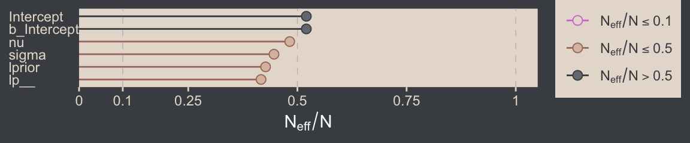
The trace plots look fine.
# Rearrange the bayesplot color scheme one more time
color_scheme_set(scheme = c("white", bp[c(2, 2, 2, 6, 3)]))
plot(fit16.2, widths = c(2, 3))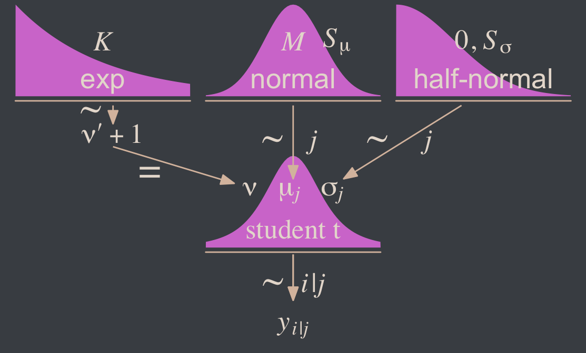
The values for nu are pretty skewed, but hopefully it makes sense to you why that might be the case. As with the pairs() plot, you can also transform parameters with the transformations argument. Here we use the log10() function for \(\nu\).
plot(fit16.2, transformations = list(nu = "log10"),
variable = "nu", widths = 2:3)Here are the overlaid density plots (with \(\nu\) back in its un-transformed metric).
draws |>
mutate(chain = .chain) |>
mcmc_dens_overlay(pars = vars(b_Intercept:nu))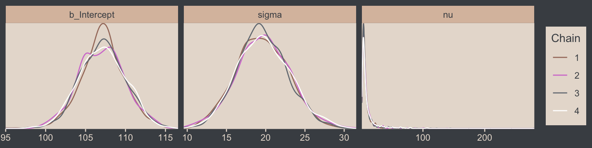
The \(\widehat R\) values are right where we like them.
brms::rhat(fit16.2, pars = c("b_Intercept", "sigma", "nu"))b_Intercept sigma nu
1.002250 1.001771 1.001341 You can use the stancode() function to return the Stan code underlying your brmsfit object.6
stancode(fit16.2)// generated with brms 2.23.0
functions {
/* compute the logm1 link
* Args:
* p: a positive scalar
* Returns:
* a scalar in (-Inf, Inf)
*/
real logm1(real y) {
return log(y - 1.0);
}
/* compute the logm1 link (vectorized)
* Args:
* p: a positive vector
* Returns:
* a vector in (-Inf, Inf)
*/
vector logm1(vector y) {
return log(y - 1.0);
}
/* compute the inverse of the logm1 link
* Args:
* y: a scalar in (-Inf, Inf)
* Returns:
* a positive scalar
*/
real expp1(real y) {
return exp(y) + 1.0;
}
/* compute the inverse of the logm1 link (vectorized)
* Args:
* y: a vector in (-Inf, Inf)
* Returns:
* a positive vector
*/
vector expp1(vector y) {
return exp(y) + 1.0;
}
}
data {
int<lower=1> N; // total number of observations
vector[N] Y; // response variable
int prior_only; // should the likelihood be ignored?
real mean_y;
real sd_y;
real one_over_twentynine;
}
transformed data {
}
parameters {
real Intercept; // temporary intercept for centered predictors
real<lower=0> sigma; // dispersion parameter
real<lower=1> nu; // degrees of freedom or shape
}
transformed parameters {
// prior contributions to the log posterior
real lprior = 0;
lprior += normal_lpdf(Intercept | mean_y, sd_y * 100);
lprior += normal_lpdf(sigma | 0, sd_y)
- 1 * normal_lccdf(0 | 0, sd_y);
lprior += exponential_lpdf(nu | one_over_twentynine)
- 1 * exponential_lccdf(1 | one_over_twentynine);
}
model {
// likelihood including constants
if (!prior_only) {
// initialize linear predictor term
vector[N] mu = rep_vector(0.0, N);
mu += Intercept;
target += student_t_lpdf(Y | nu, mu, sigma);
}
// priors including constants
target += lprior;
}
generated quantities {
// actual population-level intercept
real b_Intercept = Intercept;
}Note the last line in the parameters block, “real<lower=1> nu; // degrees of freedom or shape.” By default, brms set the lower bound for \(\nu\) to 1. We won’t spend much more time discussing Stan code in this book. But if you’d like to learn more about the topic, I’ve written a short blog series on the Stan code underlying simple brms models, the first post of which you can find here.
Just for kicks and giggles, the pp_check() offers us a handy way to compare the performance of our Gaussian fit16.2 and our Student’s \(t\) fit16.2. If we set type = "ecdf_overlay" within pp_check(), we’ll get the criterion Score displayed as a cumulative distribution function (CDF) rather than a typical density. Then, pp_check() presents CDF’s based on draws from the posterior for comparison. Just like with the default pp_check() plots, we like it when those simulated distributions mimic the one from the original data.
color_scheme_set(scheme = bp[c(1, 1, 1, 1, 1, 6)])
# `fit16.1` with the Gaussian
set.seed(16)
p1 <- pp_check(fit16.1, ndraws = n_lines, type = "ecdf_overlay") +
labs(subtitle = "fit16.1 with `family = gaussian`") +
coord_cartesian(xlim = range(my_data$Score)) +
theme(legend.position = "none")
# `fit16.2` with Student t
p2 <- pp_check(fit16.2, ndraws = n_lines, type = "ecdf_overlay") +
labs(subtitle = "fit16.2 with `family = student`") +
coord_cartesian(xlim = range(my_data$Score))
# Combine and display
p1 + p2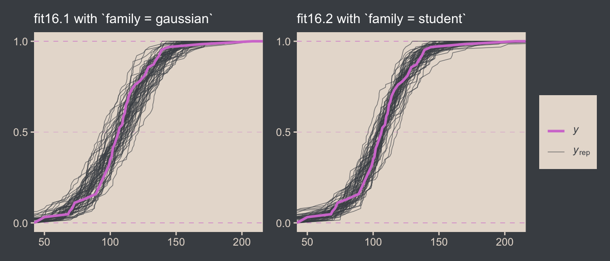
It’s subtle, but you might notice that the simulated CDFs from fit16.1 have shallower slopes in the middle when compared to the original data in the pink. However, the fit16.2-based simulated CDFs match up more closely with the original data. This suggests an edge for fit16.2. Revisiting our skills from Chapter 10, we might also compare their model weights.
model_weights(fit16.1, fit16.2) |>
round(digits = 6) fit16.1 fit16.2
0.000001 0.999999 Almost all the stacking weight (see Yao et al., 2018) went to fit16.2, our robust Student-\(t\) model. If you had to choose a single model with which to describe the data, the stacking weights lean heavily in favor of the Student-\(t\).7
16.3 Two groups
When there are two groups, we estimate the mean and scale for each group. When using \(t\) distributions for robust estimation, we could also estimate the normality of each group separately. But because there usually are relatively few outliers, we will use a single normality parameter to describe both groups, so that the estimate of the normality is more stably estimated. (p. 468)
To get a sense of what this looks like, here’s our version of the model diagram in Figure 16.11.
# Exponential density
p1 <- tibble(x = seq(from = 0, to = 1, by = 0.01)) |>
ggplot(aes(x = x, y = (dexp(x, 2) / max(dexp(x, 2))))) +
geom_area(fill = bp[6]) +
annotate(geom = "text",
x = 0.5, y = 0.2,
label = "exp",
color = bp[5], size = 7) +
annotate(geom = "text",
x = 0.5, y = 0.6,
label = "italic(K)",
color = bp[5], family = "Times", parse = TRUE, size = 7) +
scale_x_continuous(expand = c(0, 0)) +
theme_void() +
theme(axis.line.x = element_line(color = bp[4], linewidth = 0.5))
# Normal density
p2 <- tibble(x = seq(from = -3, to = 3, by = 0.1)) |>
ggplot(aes(x = x, y = (dnorm(x)) / max(dnorm(x)))) +
geom_area(fill = bp[6]) +
annotate(geom = "text",
x = 0, y = 0.2,
label = "normal",
color = bp[5], size = 7) +
annotate(geom = "text",
x = c(0, 1.5), y = 0.6,
label = c("italic(M)", "italic(S)[mu]"),
color = bp[5], family = "Times", parse = TRUE, size = 7) +
scale_x_continuous(expand = c(0, 0)) +
theme_void() +
theme(axis.line.x = element_line(color = bp[4], linewidth = 0.5))
# Half-normal density
p3 <- tibble(x = seq(from = 0, to = 3, by = 0.01),
d = (dnorm(x)) / max(dnorm(x))) |>
ggplot(aes(x = x, y = d)) +
geom_area(fill = bp[6]) +
annotate(geom = "text",
x = 1.5, y = 0.2,
label = "half-normal",
color = bp[5], size = 7) +
annotate(geom = "text",
x = 1.5, y = 0.6,
label = "0*','*~italic(S)[sigma]",
color = bp[5], family = "Times", parse = TRUE, size = 7) +
scale_x_continuous(expand = c(0, 0)) +
theme_void() +
theme(axis.line.x = element_line(color = bp[4], linewidth = 0.5))
# Four annotated arrows
p4 <- tibble(x = c(0.43, 0.43, 1.5, 2.5),
y = c(1, 0.55, 1, 1),
xend = c(0.43, 1.15, 1.5, 1.8),
yend = c(0.8, 0.15, 0.2, 0.2)) |>
ggplot(aes(x = x, xend = xend,
y = y, yend = yend)) +
geom_segment(arrow = my_arrow, color = bp[4]) +
annotate(geom = "text",
x = c(0.3, 0.65, 1.38, 1.62, 2, 2.3), y = c(0.92, 0.25, 0.6, 0.6, 0.6, 0.6),
label = c("'~'", "'='", "'~'", "italic(j)", "'~'", "italic(j)"),
size = c(10, 10, 10, 7, 10, 7),
color = bp[5], family = "Times", parse = TRUE) +
annotate(geom = "text",
x = 0.43, y = 0.7,
label = "nu*minute+1",
color = bp[5], family = "Times", parse = TRUE, size = 7) +
xlim(0, 3) +
theme_void()
# Student-t density
p5 <- tibble(x = seq(from = -3, to = 3, by = 0.1)) |>
ggplot(aes(x = x, y = (dt(x, 3) / max(dt(x, 3))))) +
geom_area(fill = bp[6]) +
annotate(geom = "text",
x = 0, y = 0.2,
label = "student t",
color = bp[5], family = "Times", size = 7) +
annotate(geom = "text",
x = 0, y = 0.6,
label = "nu~~~mu[italic(j)]~~~sigma[italic(j)]",
color = bp[5], family = "Times", parse = TRUE, size = 7) +
scale_x_continuous(expand = c(0, 0)) +
theme_void() +
theme(axis.line.x = element_line(color = bp[4], linewidth = 0.5))
# The final annotated arrow
p6 <- tibble(x = c(0.375, 0.625),
y = c(1/3, 1/3),
label = c("'~'", "italic(i)*'|'*italic(j)")) |>
ggplot(aes(x = x, y = y, label = label)) +
geom_text(color = bp[5], family = "Times", parse = TRUE, size = c(10, 7)) +
geom_segment(x = 0.5, xend = 0.5,
y = 1, yend = 0,
arrow = my_arrow, color = bp[4]) +
xlim(0, 1) +
theme_void()
# Some text
p7 <- tibble(x = 0.5,
y = 0.5,
label = "italic(y)[italic(i)*'|'*italic(j)]") |>
ggplot(aes(x = x, y = y, label = label)) +
geom_text(color = bp[5], family = "Times", parse = TRUE, size = 7) +
xlim(0, 1) +
theme_void()
# Define the layout
layout <- c(
area(t = 1, b = 2, l = 1, r = 2),
area(t = 1, b = 2, l = 3, r = 4),
area(t = 1, b = 2, l = 5, r = 6),
area(t = 4, b = 5, l = 3, r = 4),
area(t = 3, b = 4, l = 1, r = 6),
area(t = 6, b = 6, l = 3, r = 4),
area(t = 7, b = 7, l = 3, r = 4))
# Combine, augment, and display
(p1 + p2 + p3 + p5 + p4 + p6 + p7) +
plot_layout(design = layout) &
ylim(0, 1) &
theme(plot.margin = margin(0, 5.5, 0, 5.5))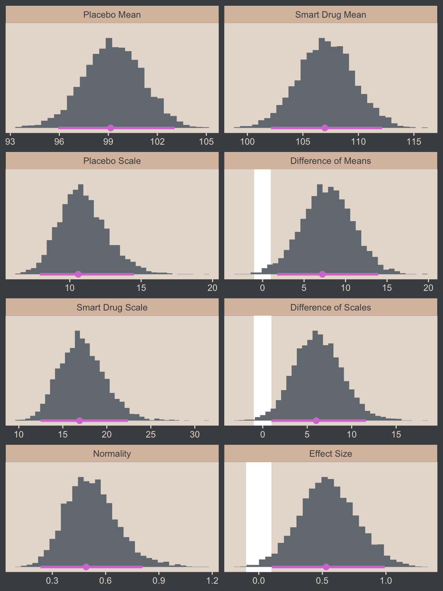
Since we subset the data, earlier, we’ll just reload it to get the full data set.
my_data <- read_csv("data.R/TwoGroupIQ.csv")This time, we’ll compute mean_y and sd_y from the full data.
mean_y <- mean(my_data$Score) # 107.8413
sd_y <- sd(my_data$Score) # 25.4452
stanvars <- stanvar(mean_y, name = "mean_y") +
stanvar(sd_y, name = "sd_y") +
stanvar(1/29, name = "one_over_twentynine")Within the brms framework, Bürkner calls it distributional modeling when you model more than the mean. Since we’re now modeling both \(\mu\) and \(\sigma\), we’re fitting a distributional model. When doing so with brms, you typically wrap your formula syntax into the bf() function. It’s also important to know that when modeling \(\sigma\), brms defaults to modeling its log. So we’ll use log(sd_y) in its prior. For more on all this, see Bürkner’s (2022a) vignette, Estimating distributional models with brms.
fit16.3 <- brm(
data = my_data,
family = student,
bf(Score ~ 0 + Group,
sigma ~ 0 + Group),
prior = c(prior(normal(mean_y, sd_y * 100), class = b),
prior(normal(0, log(sd_y)), class = b, dpar = sigma),
prior(exponential(one_over_twentynine), class = nu)),
chains = 4, cores = 4,
stanvars = stanvars,
seed = 16,
file = "fits/fit16.03")Did you catch our ~ 0 + Group syntax? That suppressed the usual intercept for our estimates of both \(\mu\) and \(\log (\sigma)\). Since Group is a categorical variable, that results in brm() fitting separate intercepts for each category. This is our brms analogue to the x[i] syntax Kruschke mentioned on page 468. It’s what allowed us to estimate \(\mu_j\) and \(\log (\sigma_j)\).8
Let’s look at the model summary.
print(fit16.3) Family: student
Links: mu = identity; sigma = log
Formula: Score ~ 0 + Group
sigma ~ 0 + Group
Data: my_data (Number of observations: 120)
Draws: 4 chains, each with iter = 2000; warmup = 1000; thin = 1;
total post-warmup draws = 4000
Regression Coefficients:
Estimate Est.Error l-95% CI u-95% CI Rhat Bulk_ESS Tail_ESS
GroupPlacebo 99.28 1.81 95.65 102.77 1.00 4221 2345
GroupSmartDrug 107.10 2.54 102.13 112.12 1.00 4445 2684
sigma_GroupPlacebo 2.38 0.15 2.08 2.69 1.00 3764 2877
sigma_GroupSmartDrug 2.84 0.15 2.54 3.12 1.00 3188 3014
Further Distributional Parameters:
Estimate Est.Error l-95% CI u-95% CI Rhat Bulk_ESS Tail_ESS
nu 3.55 1.37 1.86 7.16 1.00 2742 2886
Draws were sampled using sampling(NUTS). For each parameter, Bulk_ESS
and Tail_ESS are effective sample size measures, and Rhat is the potential
scale reduction factor on split chains (at convergence, Rhat = 1).Remember that the \(\sigma\)’s are now in the log scale. If you want a quick conversion, you might just exponentiate the point estimates from fixef().
fixef(fit16.3)[3:4, 1] |> exp() sigma_GroupPlacebo sigma_GroupSmartDrug
10.83393 17.03526 But please don’t stop there. Get your hands dirty with the full posterior. Speaking of which, if we want to make the histograms in Figure 16.12, we’ll need to first extract the posterior draws.
draws <- as_draws_df(fit16.3)
glimpse(draws)Rows: 4,000
Columns: 10
$ b_GroupPlacebo <dbl> 99.16719, 100.54338, 95.65252, 102.03916, 100.36230, 101.05343, 99.24068, 99.60996, 99.63029, 98.…
$ b_GroupSmartDrug <dbl> 104.3200, 108.2249, 109.7512, 106.6429, 106.3699, 107.4756, 105.4800, 105.3788, 107.4015, 107.294…
$ b_sigma_GroupPlacebo <dbl> 2.187976, 2.437288, 2.421437, 2.285885, 2.305314, 2.189126, 2.473225, 2.424427, 2.418429, 2.31252…
$ b_sigma_GroupSmartDrug <dbl> 2.718163, 2.831951, 2.845662, 2.740732, 2.852650, 2.843634, 2.884846, 2.860414, 2.836407, 2.73560…
$ nu <dbl> 1.781909, 4.974685, 2.557897, 3.525888, 1.983768, 3.042144, 2.826849, 3.089014, 3.840557, 3.13694…
$ lprior <dbl> -25.40045, -25.60276, -25.51948, -25.48958, -25.47336, -25.48022, -25.55344, -25.54288, -25.56023…
$ lp__ <dbl> -551.5071, -549.5005, -551.6565, -550.2347, -550.9234, -549.5740, -549.3824, -548.6740, -548.3060…
$ .chain <int> 1, 1, 1, 1, 1, 1, 1, 1, 1, 1, 1, 1, 1, 1, 1, 1, 1, 1, 1, 1, 1, 1, 1, 1, 1, 1, 1, 1, 1, 1, 1, 1, 1…
$ .iteration <int> 1, 2, 3, 4, 5, 6, 7, 8, 9, 10, 11, 12, 13, 14, 15, 16, 17, 18, 19, 20, 21, 22, 23, 24, 25, 26, 27…
$ .draw <int> 1, 2, 3, 4, 5, 6, 7, 8, 9, 10, 11, 12, 13, 14, 15, 16, 17, 18, 19, 20, 21, 22, 23, 24, 25, 26, 27…Along with transforming the metrics of a few of the parameters, we may as well rename them to match those in the text.
draws <- draws |>
mutate(`Placebo Mean` = b_GroupPlacebo,
`Smart Drug Mean` = b_GroupSmartDrug,
# We need to transform the next three parameters
`Placebo Scale` = b_sigma_GroupPlacebo |> exp(),
`Smart Drug Scale` = b_sigma_GroupSmartDrug |> exp(),
Normality = nu |> log10()) |>
mutate(`Difference of Means` = `Smart Drug Mean` - `Placebo Mean`,
`Difference of Scales` = `Smart Drug Scale` - `Placebo Scale`,
`Effect Size (SMD)` = (`Smart Drug Mean` - `Placebo Mean`) / sqrt((`Smart Drug Scale`^2 + `Placebo Scale`^2) / 2)) |>
select(.draw, `Placebo Mean`:`Effect Size (SMD)`)
glimpse(draws)Rows: 4,000
Columns: 9
$ .draw <int> 1, 2, 3, 4, 5, 6, 7, 8, 9, 10, 11, 12, 13, 14, 15, 16, 17, 18, 19, 20, 21, 22, 23, 24, 25, 26, 27…
$ `Placebo Mean` <dbl> 99.16719, 100.54338, 95.65252, 102.03916, 100.36230, 101.05343, 99.24068, 99.60996, 99.63029, 98.…
$ `Smart Drug Mean` <dbl> 104.3200, 108.2249, 109.7512, 106.6429, 106.3699, 107.4756, 105.4800, 105.3788, 107.4015, 107.294…
$ `Placebo Scale` <dbl> 8.917143, 11.441965, 11.262026, 9.834386, 10.027324, 8.927411, 11.860636, 11.295758, 11.228206, 1…
$ `Smart Drug Scale` <dbl> 15.15246, 16.97856, 17.21294, 15.49832, 17.33366, 17.17808, 17.90081, 17.46875, 17.05438, 15.4191…
$ Normality <dbl> 0.2508856, 0.6967656, 0.4078830, 0.5472685, 0.2974909, 0.4831798, 0.4513026, 0.4898199, 0.5843942…
$ `Difference of Means` <dbl> 5.152785, 7.681511, 14.098712, 4.603699, 6.007628, 6.422195, 6.239327, 5.768851, 7.771189, 9.0924…
$ `Difference of Scales` <dbl> 6.2353163, 5.5365961, 5.9509188, 5.6639361, 7.3063359, 8.2506731, 6.0401779, 6.1729925, 5.8261757…
$ `Effect Size (SMD)` <dbl> 0.4144754, 0.5305865, 0.9693114, 0.3547015, 0.4242719, 0.4691451, 0.4109118, 0.3921797, 0.5382373…Now we’re ready for the bulk of Figure 16.12.
# Save the factor levels
levels <- c("Placebo Mean", "Smart Drug Mean", "Placebo Scale", "Difference of Means",
"Smart Drug Scale", "Difference of Scales", "Normality", "Effect Size (SMD)")
# We'll use this to mark off the ROPEs as white strips in the background
rope <- tibble(name = factor(c("Difference of Means", "Difference of Scales", "Effect Size (SMD)"),
levels = levels),
xmin = c(-1, -1, -0.1),
xmax = c(1, 1, 0.1))
# Here are the primary data
draws |>
pivot_longer(cols = -.draw) |>
# This isn't necessary, but it arranged our subplots like those in the text
mutate(name = factor(name, levels = levels)) |>
# Plot
ggplot() +
geom_rect(data = rope,
aes(xmin = xmin, xmax = xmax,
ymin = -Inf, ymax = Inf),
color = "transparent", fill = "white") +
stat_histinterval(aes(x = value, y = 0),
point_interval = mode_hdi, .width = 0.95,
color = bp[6], fill = bp[2],
normalize = "panels") +
scale_y_continuous(NULL, breaks = NULL) +
xlab(NULL) +
facet_wrap(~ name, ncol = 2, scales = "free")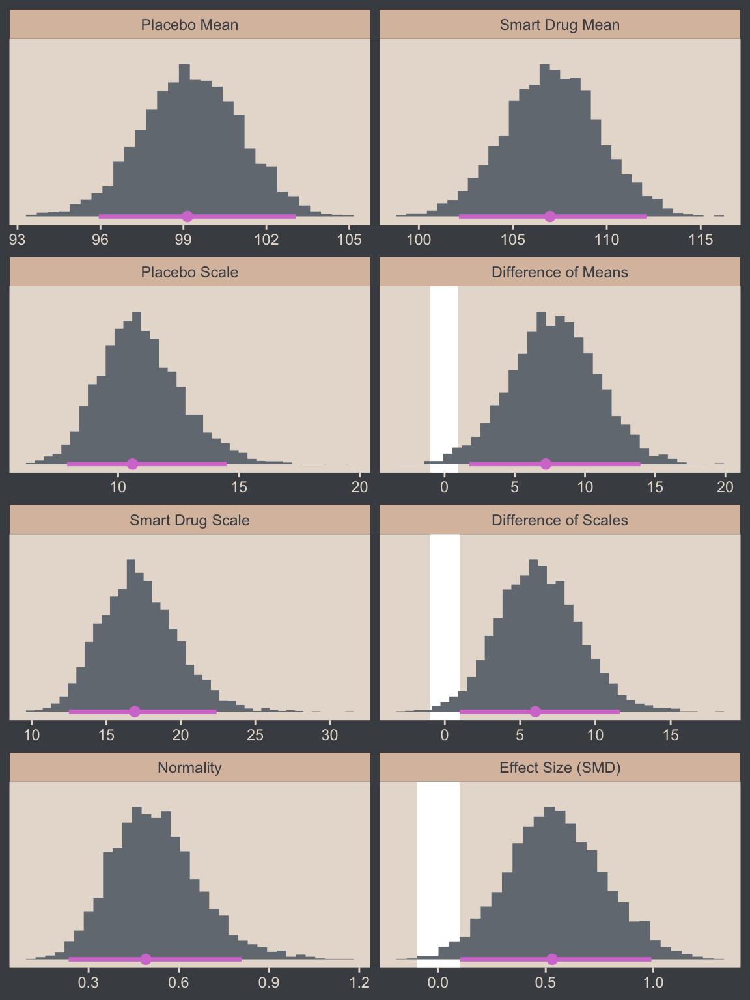
You’ll note we’ve clarified the effect size displayed is a standardized mean difference (SMD). This is because though effect sizes are often applied to mean differences, there are many other kinds of effect sizes. For example, we could also consider presenting the difference in \(\sigma\) (third row from the bottom, right column) in one of the effect-size metrics discussed in Senior et al. (2020), such as \(\sigma\) ratios (\(\sigma_2 / \sigma_1\)) or the logarithm of \(\sigma\) ratios (\(\log(\sigma_2 / \sigma_1)\)).
Now let’s make the upper two panels in the right column of Figure 16.12.
You might note a few things in our wrangling code. First, in the mutate() function we defined the density values for the two Group conditions one at a time. If you look carefully within those definitions, you’ll see we used 10^Normality for the df argument, rather than just Normality. Why? Remember how a few code blocks up we transformed the original nu column to Normality by placing it within log10()? Well, if you want to undo that, you have to take 10 to the power of Normality. Next, notice that we subset the draws tibble with select(). This wasn’t technically necessary, but it made the next line easier. Finally, with the pivot_longer() function, we transformed the Placebo and Smart Drug columns into an index column strategically named Group, which matched up with the original my_data data, and a density column, which contained the actual density values for the lines.
I know. That’s a lot to take in. If you’re confused, run the lines in the code one at a time to see how they work. But anyway, here’s the final result!
# How many credible density lines would you like?
n_lines <- 63
# Setting the seed makes the results from `slice_sample()` reproducible
set.seed(16)
# Wrangle
draws |>
slice_sample(n = n_lines) |>
expand_grid(Score = seq(from = 40, to = 250, by = 1)) |>
mutate(Placebo = dstudent_t(x = Score, df = 10^Normality, mu = `Placebo Mean`, sigma = `Placebo Scale`),
`Smart Drug` = dstudent_t(x = Score, df = 10^Normality, mu = `Smart Drug Mean`, sigma = `Smart Drug Scale`)) |>
select(.draw, Score:`Smart Drug`) |>
pivot_longer(cols = c(-.draw, -Score),
names_to = "Group", values_to = "density") |>
# Plot
ggplot(aes(x = Score)) +
geom_histogram(data = my_data,
aes(y = after_stat(density)),
binwidth = 5, boundary = 0,
fill = bp[2], linewidth = 0.2) +
geom_line(aes(y = density, group = .draw),
alpha = 1/3, color = bp[6], linewidth = 1/3) +
scale_y_continuous(NULL, breaks = NULL, expand = expansion(mult = c(0, 0.05))) +
labs(x = "y",
title = "Data with Posterior Predictive Distributions") +
coord_cartesian(xlim = c(50, 210)) +
facet_wrap(~ Group)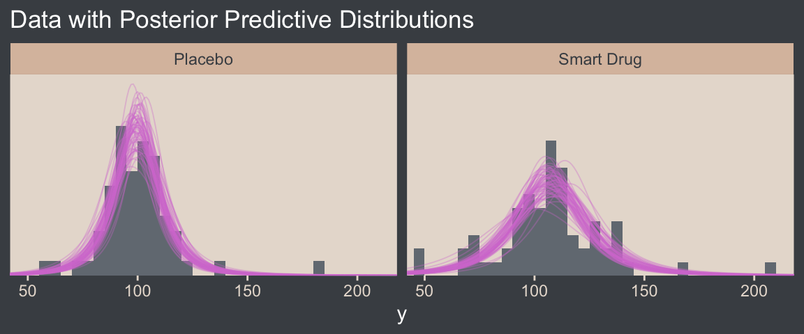
16.3.0.1 Bonus: Pooled \(\sigma\)
It was easy to miss it, but you might have noticed we changed how we computed our SMD effect size in our version of Figure 16.12. Earlier in the chapter, we simply computed our standardized mean difference by dividing by \(\sigma\), which is a fine thing to do when you have a well-defined population standard deviation. However, when you want to compute a standardized mean difference between two groups, you might not have a well-defined population standard deviation. In such a case, a common approach is to standardize the effect using a pooled standard deviation. In the case where you have two groups with equal sample sizes, the pooled standard deviation, \(\sigma_p\), is defined as
\[\sigma_p = \sqrt{\frac{\sigma_1^2 + \sigma_2^2}{2}},\]
which is the equation we used in Figure 16.12. When you don’t have equal sample sizes in groups, a popular alternative formula is
\[\sigma_p^* = \sqrt{\frac{(n_1 - 1)\sigma_1^2 + (n_2 - 1)\sigma_2^2}{n_1 + n_2 - 2}},\]
which uses the group-based sample sizes to weight their influence on \(\sigma_p^*\). Thus, the complete formulas for computing standardized mean differences for two-group experimental data are
\[d = \frac{\mu_2 - \mu_1}{\sqrt{(\sigma_1^2 + \sigma_2^2) / 2}},\]
when \(n_1 = n_2\), or
\[d = \frac{\mu_2 - \mu_1}{\sqrt{ \left[(n_1 - 1)\sigma_1^2 + (n_2 - 1)\sigma_2^2 \right] / (n_1 + n_2 - 2)}},\]
when \(n_1 \neq n_2\).
The notation we’re using here is pretty standard, and you’ll see it used in other books, articles, and online sources. However, we know from the sections above that \(\sigma = \textit{SD}\) in the context of the normal distribution, but \(\sigma = \text{scale}\) for the \(t\) distribution. It’s actually very rare to see discussions of pooled standard deviations in the contexts of robust \(t\) models, and the rotational conventions you see are often not made with those nuances in mind. So with respect to \(\sigma\), these formulas may or may not be what you’re looking for with a \(t\) model. In those cases, maybe you wanted a pooled scale, or maybe you’d want something else instead. We’ll discuss this more in Section 16.5, below.
Another key insight with this notation is that there are many formulas one can use to compute a Cohen’s \(d\) SMD. Thus, when you are computing one for a scientific presentation, it’s imperative that you tell your audience exactly how you computed your effect size. Show them the formula. Otherwise, your ambiguity could muddle how people interpret your work.
16.3.1 Analysis by NHST
Here’s how we might perform a \(t\)-test.
t.test(data = my_data,
Score ~ Group)
Welch Two Sample t-test
data: Score by Group
t = -1.958, df = 111.44, p-value = 0.05273
alternative hypothesis: true difference in means between group Placebo and group Smart Drug is not equal to 0
95 percent confidence interval:
-15.70602585 0.09366161
sample estimates:
mean in group Placebo mean in group Smart Drug
100.0351 107.8413 To help with the comparison, notice how the 95% CIs from the \(t\)-test range from -15.7 to 0.1. That indicates that the \(t\)-test subtracted the Smart Drug from Placebo. I point this out because the difference scores we computed along with Kruschke for Figure 16.12 did the subtraction in the other direction. But don’t fret. The magnitude of the difference stays the same either way. Only the signs changed. For example:
fixef(fit16.3)["GroupPlacebo", 1] - fixef(fit16.3)["GroupSmartDrug", 1][1] -7.823403fixef(fit16.3)["GroupSmartDrug", 1] - fixef(fit16.3)["GroupPlacebo", 1][1] 7.823403But anyway, in addition to the difference distributions from Figure 16.12, we might also use the brms::hypothesis() function to do something of a Bayesian \(t\)-test.
hypothesis(fit16.3, "GroupPlacebo - GroupSmartDrug = 0")Hypothesis Tests for class b:
Hypothesis Estimate Est.Error CI.Lower CI.Upper Evid.Ratio Post.Prob Star
1 (GroupPlacebo-Gro... = 0 -7.82 3.11 -13.86 -1.64 NA NA *
---
'CI': 90%-CI for one-sided and 95%-CI for two-sided hypotheses.
'*': For one-sided hypotheses, the posterior probability exceeds 95%;
for two-sided hypotheses, the value tested against lies outside the 95%-CI.
Posterior probabilities of point hypotheses assume equal prior probabilities.See how our 95% ETIs are both negative and how we have that little * in the Star column? If you like the visual approach, you can even feed the hypothesis() code into plot().
hypothesis(fit16.3, "GroupPlacebo - GroupSmartDrug = 0") |>
plot()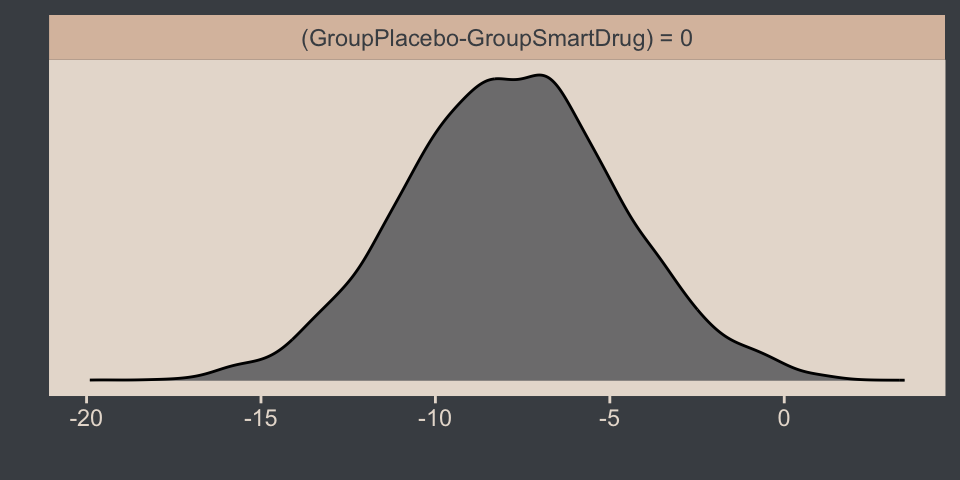
If you prefer more control over your visualizations, you can:
- Save the
hypothesis()output as an object, which will be of classbrmshypothesis. - Extract the data frame in the
samplespart of thebrmshypothesisobject using$indexing. - Then plot the output in the usual way with ggplot2 and related packages.
Here we save and investigate the hypothesis() output.
h <- hypothesis(fit16.3, "GroupPlacebo - GroupSmartDrug = 0")
class(h) # What is the class?[1] "brmshypothesis"str(h, max.level = 1) # What is the structure?List of 5
$ hypothesis :'data.frame': 1 obs. of 8 variables:
$ samples :'data.frame': 4000 obs. of 1 variable:
$ prior_samples:'data.frame': 4000 obs. of 1 variable:
$ class : chr "b"
$ alpha : num 0.05
- attr(*, "class")= chr "brmshypothesis"Now we extract the data frame and plot.
h$samples |>
ggplot(aes(x = H1, y = 0)) +
stat_histinterval(point_interval = mode_hdi, .width = 0.95,
breaks = 40, color = bp[6], fill = bp[2]) +
scale_y_continuous(NULL, breaks = NULL) +
xlab("GroupPlacebo - GroupSmartDrug = 0")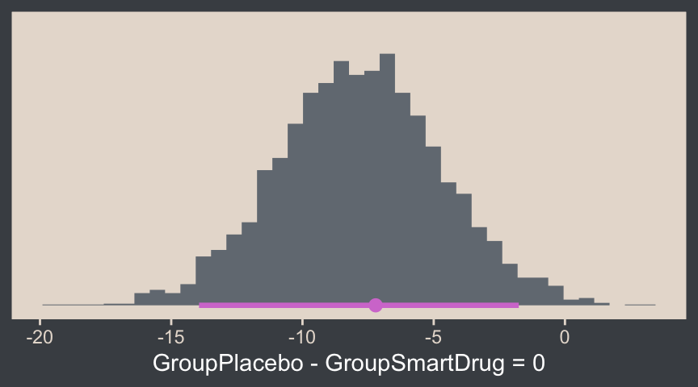
Back to the text:
The reason that the \(t\) test is less sensitive than the Bayesian estimation in this example is that the \(t\) test assumes normality and therefore its estimate of the within-group variances is too large when there are outliers.
The \(t\) test has other problems. Unlike the Bayesian analysis, the \(t\) test provides only a test of the equality of means, without a test of the equality of variances. To test equality of variances, we need to run an additional test, namely an \(F\) test of the ratio of variances, which would inflate the \(p\) values of both tests. Moreover, both tests compute \(p\) values based on hypothetical normally distributed data, and the \(F\) test is particularly sensitive to violations of this assumption. Therefore it would be better to use resampling methods to compute the \(p\) values (and correcting them for multiple tests). (pp. 471–472)
Don’t do all that. Use robust Bayes, instead. Just for kicks, we can compare the \(\sigma\)’s with hypothesis(), too.
hypothesis(fit16.3, "exp(sigma_GroupPlacebo) - exp(sigma_GroupSmartDrug) = 0")Hypothesis Tests for class b:
Hypothesis Estimate Est.Error CI.Lower CI.Upper Evid.Ratio Post.Prob Star
1 (exp(sigma_GroupP... = 0 -6.27 2.73 -11.78 -1.18 NA NA *
---
'CI': 90%-CI for one-sided and 95%-CI for two-sided hypotheses.
'*': For one-sided hypotheses, the posterior probability exceeds 95%;
for two-sided hypotheses, the value tested against lies outside the 95%-CI.
Posterior probabilities of point hypotheses assume equal prior probabilities.See? We don’t need an \(F\) test.
16.4 Other noise distributions and transforming data
It’s worth repeating a portion of this section.
If the initially assumed noise distribution does not match the data distribution, there are two ways to pursue a better description. The preferred way is to use a better noise distribution. The other way is to transform the data to a new scale so that they tolerably match the shape of the assumed noise distribution. In other words, we can either change the shoe to fit the foot, or we can squeeze the foot to fit in the shoe. Changing the shoe is preferable to squeezing the foot. In traditional statistical software, users were stuck with the pre-packaged noise distribution, and had no way to change it, so they transformed their data and squeezed them into the software. This practice can lead to confusion in interpreting the parameters because they are describing the transformed data, not the data on the original scale. In software such as [brms, we can spend less time squeezing our feet into ill-fitting shoes]. (p. 472)
We’ll have more practice with the robust Student’s \(t\) in some of the following chapters. But if you’d like even more, you might check out my blog post on the topic, Robust linear regression with Student’s \(t\)-distribution, and the companion post, Bayesian robust correlations with brms (and why you should love Student’s \(t\)).
For a high-level introduction to all the exciting shoe’s into which you might fit your data’s feet, see Bürkner’s (2021) vignette, Parameterization of Response Distributions in brms.
16.5 Exercises Bonus: Normality, scale, standard deviations, and effect sizes
In the text, and also in some of his related work (e.g., Kruschke, 2013), Kruschke blurred the lines between the Gaussian and Student-\(t\) scale parameters \(\sigma\), and the standard deviation. This blurring has consequences for how one thinks about standardized mean differences, and all of this is connected to \(\nu\). My hope is these bonus sections will bring some clarity.
16.5.1 \(\sigma\) is \(\textit{SD}\) for simple Gaussian models
For the normal distribution, \(\sigma\) is the same as the \(\textit{SD}\). In a similar way, when you fit an unconditional Gaussian model, the \(\sigma\) posterior is the same as the posterior for the population-level \(\textit{SD}\). When you fit a simple two-group Gaussian model, the two \(\sigma\) posteriors are the same as the population-level \(\textit{SD}\) posteriors for the two groups. In Section 16.1.2, we didn’t fit an unconditional Gaussian model on the entire data set, and in Section 16.3 we didn’t actually fit a simple two-group Gaussian model, so we’ll fit those models here for exposition.
# Update the sample statistics
mean_y <- mean(my_data$Score)
sd_y <- sd(my_data$Score)
# Update the `stanvars` object
stanvars <- stanvar(mean_y, name = "mean_y") +
stanvar(sd_y, name = "sd_y")
# Unconditional model
fit16.4 <- brm(
data = my_data,
family = gaussian,
Score ~ 1,
prior = c(prior(normal(mean_y, sd_y * 100), class = Intercept),
prior(normal(0, sd_y), class = sigma)),
chains = 4, cores = 4,
stanvars = stanvars,
seed = 16,
file = "fits/fit16.04")
# Conditional on `Group`
fit16.5 <- brm(
data = my_data,
family = gaussian,
bf(Score ~ 0 + Group,
sigma ~ 0 + Group),
prior = c(prior(normal(mean_y, sd_y * 100), class = b),
prior(normal(0, log(sd_y)), class = b, dpar = sigma)),
chains = 4, cores = 4,
stanvars = stanvars,
seed = 16,
file = "fits/fit16.05")If you fit these models on your computer, it’s wise to look over the print() output to get a sense of their parameters, the default HMC diagnostics, and so on. Here we move straight to a plot.
# Compute conditional sample statistics
group_sd <- my_data |>
group_by(Group) |>
summarise(sigma = sd(Score))
# Left panel
p1 <- as_draws_df(fit16.4) |>
ggplot(aes(x = sigma)) +
stat_histinterval(point_interval = mode_hdi, .width = 0.95,
breaks = 40, color = bp[6], fill = bp[2]) +
geom_vline(xintercept = sd(my_data$Score),
color = bp[4], linetype = 2) +
scale_y_continuous(NULL, breaks = NULL) +
xlab(expression(sigma~(the~same~as~an~unconditional~italic(SD)))) +
facet_wrap(~ "fit16.4 (unconditional)")
# Right panel
p2 <- as_draws_df(fit16.5) |>
mutate(Placebo = exp(b_sigma_GroupPlacebo),
`Smart Drug` = exp(b_sigma_GroupSmartDrug)) |>
pivot_longer(cols = Placebo:`Smart Drug`, names_to = "Group", values_to = "sigma") |>
ggplot(aes(x = sigma)) +
stat_histinterval(point_interval = mode_hdi, .width = 0.95,
breaks = 40, color = bp[6], fill = bp[2]) +
geom_vline(data = group_sd,
aes(xintercept = sigma),
color = bp[4], linetype = 2) +
scale_y_continuous(NULL, breaks = NULL) +
xlab(expression(sigma[Group]~(the~same~as~italic(SD)[Group]))) +
facet_grid(Group ~ "fit16.5 (conditional)")
# Combine, adjust, and display
(p1 | p2) &
xlim(10, 40) &
plot_annotation(
title = expression("For simple Gaussian models, "*sigma*" corresponds to the "*italic(SD)),
subtitle = "The dashed lines mark the sample statistics.")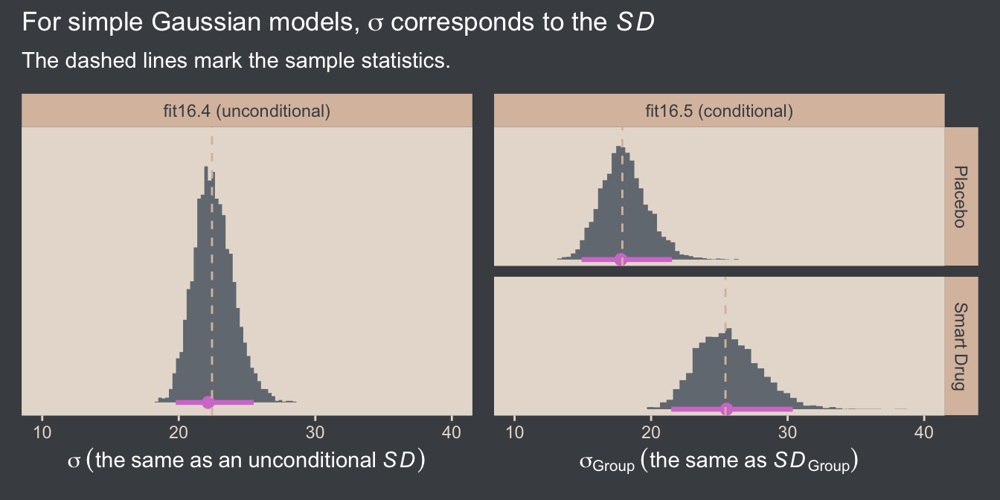
To be clear, I am using the language of simple Gaussian models for either completely unconditional models, such as fit16.4, or distributional Gaussian models only conditional on a single grouping variable, such as fit16.5. Once you start throwing in covariates, you’re no longer simple in this sense.
We can also use our simple conditional Gaussian model fit16.5 to compute a pooled \(\sigma\), which is the same as a pooled \(\textit{SD}\), with the formula
\[\sigma_p = \sqrt{\frac{\sigma_1^2 + \sigma_2^2}{2}},\]
which is the equation we used in Figure 16.12. Here we compute \(\sigma_p\) from the conditional model, and compare it with \(\sigma\) from the unconditional model.
# Compute the pooled SD from the conditional Gaussian model
as_draws_df(fit16.5) |>
mutate(sigma_1 = exp(b_sigma_GroupPlacebo),
sigma_2 = exp(b_sigma_GroupSmartDrug)) |>
# Use the equation
mutate(`sigma[italic(p)]` = sqrt((sigma_1^2 + sigma_2^2) / 2),
# Add the SD from the unconditional Gaussian model
sigma = as_draws_df(fit16.4) |> pull(sigma)) |>
pivot_longer(cols = `sigma[italic(p)]`:sigma) |>
ggplot(aes(x = value, y = name)) +
stat_histinterval(point_interval = mode_hdi, .width = 0.95,
breaks = 40, color = bp[6], fill = bp[2]) +
scale_y_discrete(NULL, labels = ggplot2:::parse_safe, expand = expansion(mult = 0.1)) +
geom_vline(xintercept = sd(my_data$Score),
color = bp[4], linetype = 2) +
labs(x = "Parameter space",
title = expression(Both~posteriors~approximate~the~italic(SD)),
subtitle = "The dashed line marks the sample statistic.")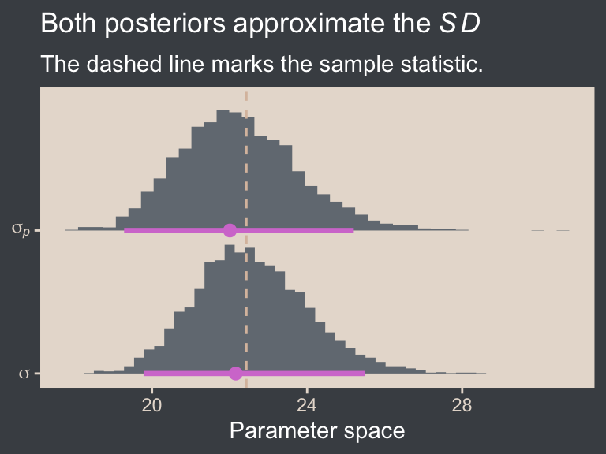
Note that conceptually, \(\sigma_p\) is not the same as \(\sigma\). Whereas \(\sigma\) includes the variation between the groups, \(\sigma_p\) excludes that level of variation, so \(\sigma_p\) will tend to be smaller than \(\sigma\). In this case, they’re pretty similar.
16.5.2 \(\sigma\) is not the \(\textit{SD}\) for the Student-\(t\)
As we saw above in Section 16.2, how we define the \(\textit{SD}\) of the Student-\(t\) distribution depends on the value of \(\nu\). The \(\textit{SD}\) is finite only where \(\nu > 2\), and in those cases we can define the \(\textit{SD}\) with the formula
\[\textit{SD} = \sigma \sqrt{\nu / (\nu - 2)}.\]
When \(\nu = 2\), the \(\nu / (\nu - 2)\) portion of the equation goes to \(\infty\), and whenever \(\nu < 2\) that same \(\nu / (\nu - 2)\) portion of the equation becomes negative. In either case, you’re in trouble when you try to square such a value.
Another thing to keep in mind is how the \(\nu\) parameter influences the mean. It turns out the mean of the Student-\(t\) distribution is only defined when \(\nu > 1\). This condition is the origin if the brms default lb = 1 for priors of class = nu. Though we will not entertain it here, you can set lb = 0 for priors of class = nu if you would like.9
We haven’t done so yet, but we might explore the unconditional Student-\(t\) model of the full data set. Recall that our first unconditional Student-\(t\) model fit16.2 was fit with a subset of the full data set. So here we’ll just fit the model in haste with the update() function.
fit16.6 <- update(
fit16.2,
newdata = my_data,
seed = 16,
file = "fits/fit16.06")Again, it’s wise to check the print() output if you are following along on your own computer. Here we just jump straight to a plot of the \(\nu\) posterior.
as_draws_df(fit16.6) |>
ggplot(aes(x = nu)) +
stat_histinterval(point_interval = mode_hdi, .width = 0.95,
breaks = 0:65 / 4, color = bp[6], fill = bp[2]) +
scale_x_continuous(expression(nu), breaks = c(0, 1, 2, 4, 8, 16), limits = c(0, NA)) +
scale_y_continuous(NULL, breaks = NULL)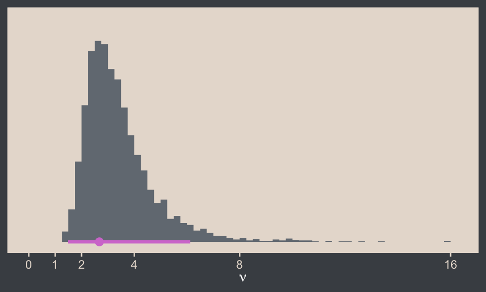
As expected, the lb = 1 setting for its prior guaranteed none of the posterior draws for \(\nu\) were at or below 1. However, some of the draws were below 2. As a consequence, we cannot easily compute a posterior for the standard deviation from this model with the algebra \(\sigma \sqrt{\nu / (\nu - 2)}\). To see why, let’s first give it a shot.
as_draws_df(fit16.6) |>
mutate(sd = sigma * sqrt(nu / (nu - 2))) |>
select(sigma, nu, sd) |>
head()# A tibble: 6 × 3
sigma nu sd
<dbl> <dbl> <dbl>
1 14.2 2.67 28.2
2 12.2 3.28 19.6
3 16.4 2.74 31.6
4 12.0 3.24 19.4
5 14.7 2.86 26.8
6 16.0 3.40 25.0By chance, the algebra seemed to work fine for the first six rows in the data frame. However, see what happens when we arrange the data in ascending order by nu.
as_draws_df(fit16.6) |>
mutate(sd = sigma * sqrt(nu / (nu - 2))) |>
select(sigma, nu, sd) |>
arrange(nu) |>
head()# A tibble: 6 × 3
sigma nu sd
<dbl> <dbl> <dbl>
1 11.9 1.26 NaN
2 8.76 1.27 NaN
3 9.26 1.30 NaN
4 9.90 1.36 NaN
5 12.2 1.37 NaN
6 9.27 1.37 NaNWe get an NaN for all the draws for which nu < 2. Look at what happens if you try to take a mean or median from such a vector.
as_draws_df(fit16.6) |>
mutate(sd = sigma * sqrt(nu / (nu - 2))) |>
summarise(m = mean(sd),
mdn = median(sd))# A tibble: 1 × 2
m mdn
<dbl> <dbl>
1 NaN NAOne solution for this is to just drop all the draws for which nu < 2 any time you’d like a posterior for a Student-\(t\) \(\textit{SD}\). This would effectively be like returning the posterior for \(\textit{SD}\), had you fit the model with the lb = 2 setting on the prior for \(\nu\), in a form of rejection sampling.10 Another solution is to set lb = 2 for parameters of class = nu in your Student-\(t\) models before fitting them. Here’s what that can look like with brm().
# Update the `stanvars`
stanvars <- stanvar(mean_y, name = "mean_y") +
stanvar(sd_y, name = "sd_y") +
stanvar(1/29, name = "one_over_twentynine")
# Fit the model
fit16.7 <- brm(
data = my_data,
family = student,
Score ~ 1,
prior = c(prior(normal(mean_y, sd_y * 100), class = Intercept),
prior(normal(0, sd_y), class = sigma),
# Notice we've changed the `lb` setting
prior(exponential(one_over_twentynine), class = nu, lb = 2)),
chains = 4, cores = 4,
stanvars = stanvars,
seed = 16,
file = "fits/fit16.07")Here’s the updated posterior for \(\nu\).
as_draws_df(fit16.7) |>
ggplot(aes(x = nu)) +
stat_histinterval(point_interval = mode_hdi, .width = 0.95,
breaks = 0:180 / 4,
color = bp[6], fill = bp[2]) +
scale_x_continuous(expression(nu), breaks = c(0, 2, 4, 8, 16)) +
scale_y_continuous(NULL, breaks = NULL) +
coord_cartesian(xlim = c(0, 16))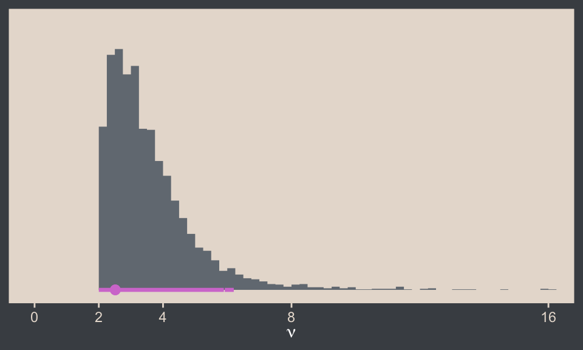
The bulk of the posterior is about where it was before, but now there are no draws below 2. As a consequence, we have a completely finite posterior for the population \(\textit{SD}\). Here’s what that looks like compared to the sample statistic.
as_draws_df(fit16.7) |>
mutate(sd = sigma * sqrt(nu / (nu - 2))) |>
ggplot(aes(x = sd)) +
stat_histinterval(point_interval = mode_hdi, .width = 0.95,
breaks = ggdist::breaks_fixed(width = 0.5),
color = bp[6], fill = bp[2]) +
geom_vline(xintercept = sd(my_data$Score),
color = bp[4], linetype = 2) +
scale_y_continuous(NULL, breaks = NULL) +
coord_cartesian(xlim = c(10, 40)) +
labs(x = expression(italic(SD)~(sigma*sqrt(nu/(nu-2)))),
title = expression('For the Student-'*italic(t)*', the '*italic(SD)!=sigma),
subtitle = "The dashed line marks the sample statistic.")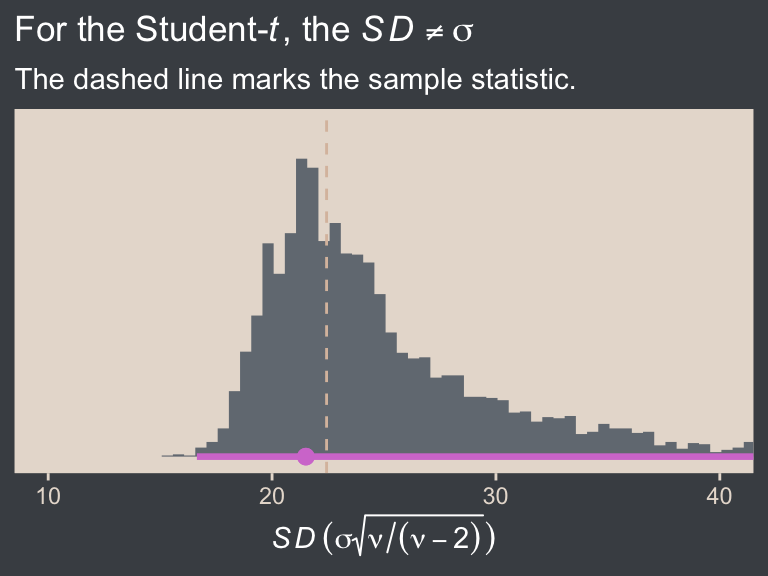
Interestingly, the long right tail in the \(\nu\) posterior appears to have had consequences for the \(\textit{SD}\) posterior. Even so, the bulk of the distribution is centered right on the sample statistic, as one would hope given our weak priors.
We can extend this workflow to simple Student-\(t\) models conditional on a grouping variable. We already have one version of such a model in fit16.3. Before we try, we should look at the \(\nu\) posterior from that model.
as_draws_df(fit16.3) |>
ggplot(aes(x = nu)) +
stat_histinterval(point_interval = mode_hdi, .width = 0.95,
breaks = 0:180 / 4,
color = bp[6], fill = bp[2]) +
scale_x_continuous(expression(nu), breaks = c(0, 1, 2, 4, 8, 16)) +
scale_y_continuous(NULL, breaks = NULL) +
coord_cartesian(xlim = c(0, 16))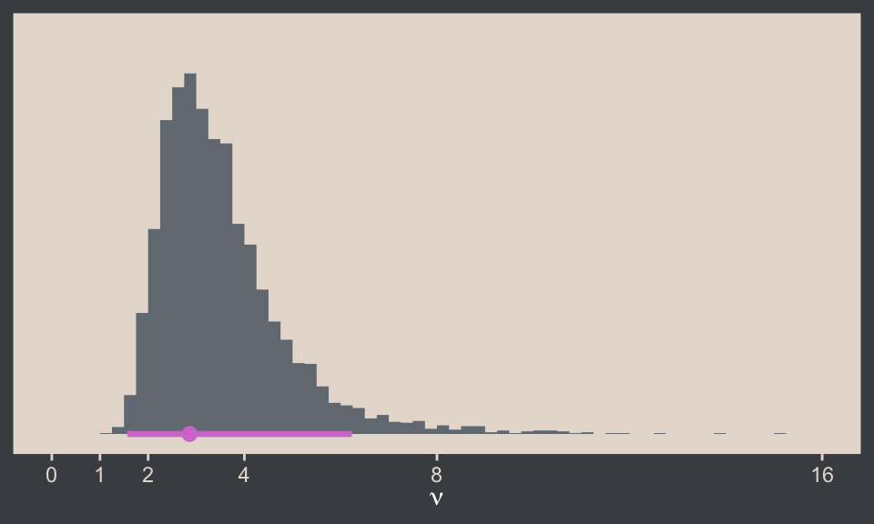
We used the default lb = 1 setting, and some of the \(\nu\) draws were indeed below 2. Let’s try fitting a version of that model with lb = 2 for the prior of class = nu.
fit16.8 <- brm(
data = my_data,
family = student,
bf(Score ~ 0 + Group,
sigma ~ 0 + Group),
prior = c(prior(normal(mean_y, sd_y * 100), class = b),
prior(normal(0, log(sd_y)), class = b, dpar = sigma),
prior(exponential(one_over_twentynine), class = nu, lb = 2)),
chains = 4, cores = 4,
stanvars = stanvars,
seed = 16,
file = "fits/fit16.08")Check the new \(\nu\) posterior.
as_draws_df(fit16.8) |>
ggplot(aes(x = nu)) +
stat_histinterval(point_interval = mode_hdi, .width = 0.95,
breaks = 0:100 / 4,
color = bp[6], fill = bp[2]) +
scale_x_continuous(expression(nu), breaks = c(0, 2, 4, 8, 16)) +
scale_y_continuous(NULL, breaks = NULL) +
coord_cartesian(xlim = c(0, 16))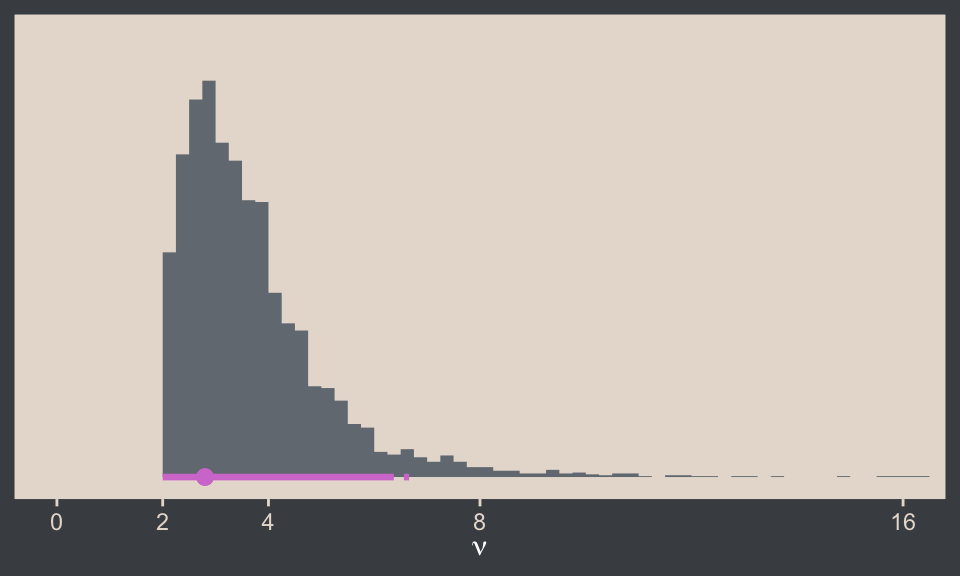
Gorgeous in all its \(> 2\) glory. Next it might be helpful to plot the posteriors for \(\sigma_\text{Group}\) and \(\textit{SD}_\text{Group}\), and compare them both with the sample statistics.
as_draws_df(fit16.8) |>
mutate(across(.cols = b_sigma_GroupPlacebo:b_sigma_GroupSmartDrug, .fns = exp)) |>
rename(Placebo = b_sigma_GroupPlacebo,
`Smart Drug` = b_sigma_GroupSmartDrug) |>
pivot_longer(cols = Placebo:`Smart Drug`, names_to = "Group", values_to = "sigma") |>
mutate(`italic(SD)` = sigma * sqrt(nu / (nu - 2))) |>
pivot_longer(cols = sigma:`italic(SD)`, names_to = "statistic") |>
ggplot(aes(x = value, y = statistic)) +
stat_histinterval(point_interval = mode_hdi, .width = 0.95,
breaks = ggdist::breaks_fixed(width = 0.5),
color = bp[6], fill = bp[2]) +
geom_vline(data = group_sd,
aes(xintercept = sigma),
color = bp[4], linetype = 2) +
scale_y_discrete(NULL, labels = ggplot2:::parse_safe, expand = expansion(mult = 0.1)) +
labs(x = "Parameter space",
title = expression('For the Student-'*italic(t)*', the '*italic(SD)['<group>']!=sigma['<group>']),
subtitle = "The dashed lines mark the sample statistics.") +
coord_cartesian(xlim = c(NA, 40)) +
facet_wrap(~ Group)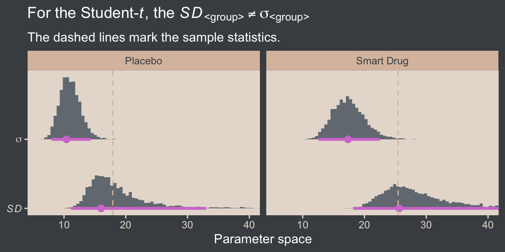
Again, we see that pattern of how the long right tail in the \(\nu\) posterior appears to produce longer right tails in the \(\textit{SD}_\text{Group}\) posteriors relative to their analogues from the conditional Gaussian model. But their central tendencies are still right near the sample statistics. The \(\sigma_\text{Group}\) posteriors are systemically smaller than those for \(\textit{SD}_\text{Group}\), which is in line with the what Kruschke wrote in the text:
It is important to understand that the scale parameter \(\sigma\) in the \(t\) distribution is not the standard deviation of the distribution… The standard deviation is actually larger than \(\sigma\) because of the heavy tails. (p. 459)
This will always be so, with the exception of the special case where \(\nu = \infty\), which is when the \(t\) distribution becomes the Gaussian.
16.5.3 Distinguish between \(\sigma_p\) and \(\textit{SD}_p\)
Back in Section 16.5.1 we reported the simple formula for the pooled standard deviation
\[\sigma_p = \sqrt{\frac{\sigma_1^2 + \sigma_2^2}{2}},\]
where in the context of the Gaussian distribution \(\sigma = \textit{SD}\). When we move to robust-\(t\) models, we should probably distinguish between the pooled scale \(\sigma_p\) and the pooled standard deviation \(\textit{SD}_p\). If we would like a pooled scale for our \(t\) model, the equation above is fine. But if we’re interested in a pooled standard deviation, we should instead use
\[\textit{SD}_p = \sqrt{\frac{\textit{SD}_1^2 + \textit{SD}_2^2}{2}}.\]
Here we compute these two quantities, and compare them to the sample pooled standard deviation computed directly from the data.
# Compute the sample SD_p
sd_p <- my_data |>
group_by(Group) |>
summarise(sd = sd(Score)) |>
summarise(sd_p = sqrt(sum(sd^2) / 2)) |>
pull(sd_p)
# Wrangle the posterior
as_draws_df(fit16.8) |>
mutate(sigma_1 = exp(b_sigma_GroupPlacebo),
sigma_2 = exp(b_sigma_GroupSmartDrug)) |>
mutate(sd_1 = sigma_1 * sqrt(nu / (nu - 2)),
sd_2 = sigma_2 * sqrt(nu / (nu - 2))) |>
mutate(`sigma[italic(p)]` = sqrt((sigma_1^2 + sigma_2^2) / 2),
`italic(SD)[italic(p)]` = sqrt((sd_1^2 + sd_2^2) / 2)) |>
pivot_longer(cols = contains("italic")) |>
ggplot(aes(x = value, y = name)) +
stat_histinterval(point_interval = mode_hdi, .width = 0.95,
breaks = ggdist::breaks_fixed(width = 0.5),
color = bp[6], fill = bp[2]) +
geom_vline(xintercept = sd_p,
color = bp[4], linetype = 2) +
scale_y_discrete(NULL, labels = ggplot2:::parse_safe, expand = expansion(mult = 0.1)) +
labs(x = "Parameter space",
title = expression(Only~italic(SD)[italic(p)]~approximates~the~sample~italic(SD)[italic(p)]),
subtitle = expression("The dashed line marks the sample statistic, "*italic(s[p])*".")) +
coord_cartesian(xlim = c(NA, 40))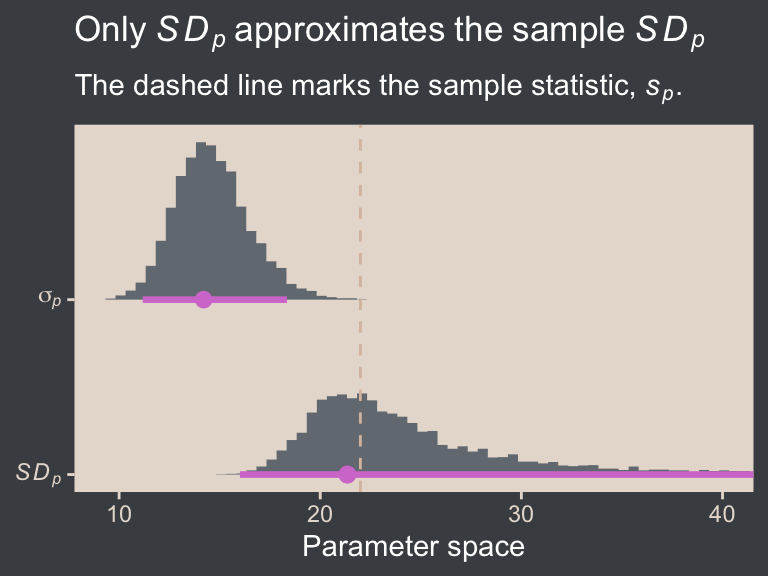
As expected from Kruschke’s quote from the end of Section 16.5.2 above, \(\sigma_p\) is clearly lower than \(\textit{SD}_p\). Kruschke didn’t really compare them in the text, and it seems like he took it for granted that one would prefer \(\sigma_p\). I’m not so sure about that, and we’ll explore the issue further below.
16.5.4 Distinguish between \(d\) and \(d\)
On page 457 of the text, Kruschke casually defined effect size like so:
Effect size is simply the amount of change induced by the treatment relative to the standard deviation: \((\mu − 100)/\sigma\) . In other words, effect size is the “standardized” change.
His definition was in the context of the one-group model from Section 16.1.2 (fit16.1), which is where the value of 100 came from. IMO, this is not a great definition of the term effect size, and I’d like to walk it out a bit to help clarify why we might care about tedious concepts like \(\sigma_p\) and \(\textit{SD}_p\).
The basic issue with effect sizes is this: We collect and analyze data to answer our scientific questions using statistical procedures. Sometimes those statistical procedures are simple, and sometimes they are complex. Regardless, the primary outputs of those procedures (e.g., \(p\) values, regression coefficients, Bayes’ Factors, contrasts of fitted values) aren’t always easy to understand to the scientists who perform them, to their target audiences (e.g., other scientists, decision makers, members of the general public), or both. The primary goal of an effect size is to take the output of a statistical procedure and present it in a metric that will be easier for scientists and/or those in their target audiences to understand, and part of that task involves expressing the output with a sense of magnitude. As we have many different statistical procedures for many kinds of data, and as these might be presented to a variety of target audiences, there are many different kinds of effect sizes. For a nice overview on the topic, see Kelley & Preacher (2012), especially the first few pages.
The notion of an effect size is perhaps most strongly connected to the work of the late Jacob Cohen, who was a psychologist interested in statistical methodology. Cohen’s most influential work was probably his (1988) book, Statistical Power Analysis for the Behavioral Sciences. In the second chapter of that book (p. 19), Cohen introduced a class of effect sizes designed to compare the means of two Gaussian distributions called standardized mean differences (SMDs). The most popular subset of this class is called Cohen’s \(d\), for which you might think of the d as standing for difference. Somewhat confusingly, Cohen’s \(d\) is itself a class of statistics, so when you see someone refer to a Cohen’s \(d\) you can never be sure what they mean until they provide a formula. But generally speaking, the template is
\[d = \frac{\bar y_1 - \bar y_2}{\text{standardizer}}.\]
In this formula, \(\bar y_1\) is the sample mean of one group, \(\bar y_2\) is the sample mean of some other group, and the denominator is some standardizer. Most often, the standardizer is a pooled standard deviation,11 which we can define using sample statistics as
\[s_p = \sqrt{\frac{s_1^2 + s_2^2}{2}},\]
where \(s_1\) and \(s_2\) are the group-level sample standard deviations. Notice Cohen’s most influential book was published in 1988. Back in the day, folks weren’t computing effect sizes with fancy Bayesian posteriors sampled from using high-powered personal laptops or desktop computers. Researchers were computing these things by hand with basic sample statistics. But when one wants to go beyond sample statistics and generalize to the population, you might then use the formula
\[d = \frac{\mu_1 - \mu_2}{\sigma_p},\]
where
\[\sigma_p = \sqrt{\frac{\sigma_1^2 + \sigma_2^2}{2}},\]
where \(\mu_\text{<group>}\), \(\sigma_\text{<group>}\), and \(\sigma_p\) are all now population estimates which we would nowadays use our computers to compute within the context of some regression model.12 For our purposes, it’s critical to appreciate that this is all still typically done under the assumption the group-level data are Gaussian, and therefore the \(\sigma\) terms refer both to the Gaussian scale parameter and to the standard deviation, because for the Gaussian likelihood those two are the same.
This all breaks down when one wants to compute a standardized mean difference from a robust Student-\(t\) model. Because the \(t\) distribution adds the \(\nu\) parameter, \(\sigma \neq \textit{SD}\), and it is no longer clear what the standardizer should be. In the text, Kruschke ran with the pooled scale \(\sigma_p\), but he gave no discussion of why one would prefer that to the pooled standard deviation, what I’m calling \(\textit{SD}_p\).
A related issue is what we should even call a standardized mean difference computed from a robust Student-\(t\) model. I’m not aware of much work on this. The term effect size is very generic and could easily mislead students into thinking effect sizes were the same as Cohen’s \(d\)s or SMDs. But even the term Cohen’s \(d\) might not be appropriate, here, because \(d\) was originally defined under the Gaussian framework. As a place to start, I propose we use
\[ d_{t_\sigma} = \frac{\mu_1 - \mu_2}{\sigma_p} \]
when we are computing Cohen’s \(d\) from a Student-\(t\) model and using the pooled scale \(\sigma\) as the standardizer, as Kruschke did in the text. Therefore I propose we use
\[ d_{t_\textit{SD}} = \frac{\mu_1 - \mu_2}{\textit{SD}_p} \]
when we use the pooled standard deviation as the standardizer in the context of a Student-\(t\) model. Though I acknowledge the double subscript is somewhat awful, it’s the best I can come up with at the moment.
Above we computed \(s_p\) by hand. Here we continue on to compute \(d\) by hand with the sample means.
d <- my_data |>
summarise(d = (mean(Score[Group == "Smart Drug"]) - mean(Score[Group == "Placebo"])) / sd_p) |>
pull(d)
# What?
d[1] 0.3548867Now compare this sample statistic to the posterior distributions of \(d_{t_\textit{SD}}\) and \(d_{t_\sigma}\).
as_draws_df(fit16.8) |>
mutate(sigma_1 = exp(b_sigma_GroupPlacebo),
sigma_2 = exp(b_sigma_GroupSmartDrug)) |>
mutate(sd_1 = sigma_1 * sqrt(nu / (nu - 2)),
sd_2 = sigma_2 * sqrt(nu / (nu - 2))) |>
mutate(sigma_p = sqrt((sigma_1^2 + sigma_2^2) / 2),
sd_p = sqrt((sd_1^2 + sd_2^2) / 2)) |>
mutate(`italic(d)[italic(t)[sigma]]` = (b_GroupSmartDrug - b_GroupPlacebo) / sigma_p,
`italic(d)[italic(t)[italic(SD)]]` = (b_GroupSmartDrug - b_GroupPlacebo) / sd_p) |>
pivot_longer(cols = contains("italic")) |>
ggplot(aes(x = value, y = name)) +
geom_rect(xmin = -0.1, xmax = 0.1,
ymin = -Inf, ymax = Inf,
color = "transparent", fill = "white") +
stat_histinterval(point_interval = mode_hdi, .width = 0.95,
color = bp[6], fill = bp[2]) +
geom_vline(xintercept = d,
color = bp[4], linetype = 2) +
scale_y_discrete(NULL, labels = ggplot2:::parse_safe, expand = expansion(mult = 0.1)) +
labs(x = "SMD parameter space",
title = expression(For~italic(d)[italic(t)]~the~choice~of~standardizer~matters),
subtitle = "The dashed line marks the sample statistic.")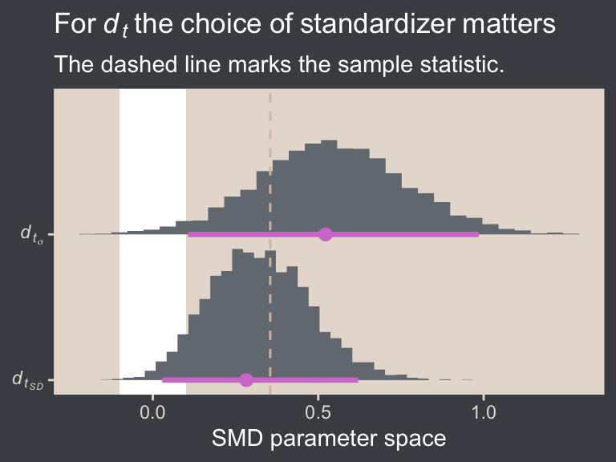
In the case of a model fit with a \(t\) distribution, it’s not entirely clear that any \(d_t\) posterior should approximate the SMD computed by hand with sample statistics, especially when you have stronger priors. But what I hope is clear is that because the \(\sigma_p\) posterior will always be smaller than the \(\textit{SD}_p\) posterior when \(\nu < \infty\), the \(d_{t_\sigma}\) effect size will be systemically larger than the \(d_{t_\textit{SD}}\) effect size. However, because I suspect the \(d_{t_\textit{SD}}\) is conceptually closer to what many researchers will assume you mean when you tell them you’re presenting a Cohen’s \(d\), I think readers should seriously consider using \(d_{t_\textit{SD}}\), instead of the \(d_{t_\sigma}\) Kruschke used throughout the text.
16.5.5 Other examples of effect sizes
It’s beyond the scope of this book to give a comprehensive list of effect sizes, though do look through works like Cohen (1988) and Kelley & Preacher (2012). But to give a sense, we’ve already seen several other effect sizes in this book. I’ll point out two. The first is the probability contrast we saw in Section 8.4. Probabilities are a metric many researchers will find understandable and meaningful, and a difference in probabilities gives a sense of magnitude. The second example is the unstandardized mean difference we computed and displayed in the panel in the second row from the top and column to the right in our version of Figure 16.12 from Section 16.3. If you are an IQ researcher, or anyone familiar with IQ scores, it’s easy to interpret an IQ difference of 7.13 Notice that in both these examples, the effect sizes were not standardized,14 and indeed many effect sizes are not. But some are, and the Cohen’s \(d\) family is a very popular family of standardized effect sizes.
Session info
sessionInfo()R version 4.5.1 (2025-06-13)
Platform: aarch64-apple-darwin20
Running under: macOS Ventura 13.4
Matrix products: default
BLAS: /Library/Frameworks/R.framework/Versions/4.5-arm64/Resources/lib/libRblas.0.dylib
LAPACK: /Library/Frameworks/R.framework/Versions/4.5-arm64/Resources/lib/libRlapack.dylib; LAPACK version 3.12.1
locale:
[1] en_US.UTF-8/en_US.UTF-8/en_US.UTF-8/C/en_US.UTF-8/en_US.UTF-8
time zone: America/Chicago
tzcode source: internal
attached base packages:
[1] stats graphics grDevices utils datasets methods base
other attached packages:
[1] metRology_0.9-29-2 bayesplot_1.14.0 tidybayes_3.0.7 patchwork_1.3.2 brms_2.23.0 Rcpp_1.1.0
[7] beyonce_0.1 lubridate_1.9.4 forcats_1.0.1 stringr_1.6.0 dplyr_1.1.4 purrr_1.2.0
[13] readr_2.1.5 tidyr_1.3.1 tibble_3.3.0 ggplot2_4.0.1 tidyverse_2.0.0
loaded via a namespace (and not attached):
[1] tidyselect_1.2.1 svUnit_1.0.8 farver_2.1.2 loo_2.8.0 S7_0.2.1
[6] fastmap_1.2.0 TH.data_1.1-4 tensorA_0.36.2.1 digest_0.6.37 estimability_1.5.1
[11] timechange_0.3.0 lifecycle_1.0.4 StanHeaders_2.32.10 survival_3.8-3 magrittr_2.0.4
[16] posterior_1.6.1 compiler_4.5.1 rlang_1.1.6 tools_4.5.1 utf8_1.2.6
[21] yaml_2.3.10 knitr_1.50 labeling_0.4.3 bridgesampling_1.1-2 htmlwidgets_1.6.4
[26] curl_7.0.0 pkgbuild_1.4.8 bit_4.6.0 plyr_1.8.9 RColorBrewer_1.1-3
[31] multcomp_1.4-29 abind_1.4-8 withr_3.0.2 numDeriv_2016.8-1.1 stats4_4.5.1
[36] grid_4.5.1 colorspace_2.1-2 inline_0.3.21 xtable_1.8-4 emmeans_1.11.2-8
[41] scales_1.4.0 MASS_7.3-65 cli_3.6.5 mvtnorm_1.3-3 crayon_1.5.3
[46] rmarkdown_2.30 generics_0.1.4 RcppParallel_5.1.11-1 rstudioapi_0.17.1 robustbase_0.99-6
[51] reshape2_1.4.4 tzdb_0.5.0 rstan_2.32.7 splines_4.5.1 parallel_4.5.1
[56] matrixStats_1.5.0 vctrs_0.6.5 V8_8.0.1 Matrix_1.7-3 sandwich_3.1-1
[61] jsonlite_2.0.0 hms_1.1.4 arrayhelpers_1.1-0 bit64_4.6.0-1 ggdist_3.3.3
[66] glue_1.8.0 DEoptimR_1.1-4 codetools_0.2-20 distributional_0.5.0 stringi_1.8.7
[71] gtable_0.3.6 QuickJSR_1.8.1 pillar_1.11.1 htmltools_0.5.8.1 Brobdingnag_1.2-9
[76] R6_2.6.1 vroom_1.6.6 evaluate_1.0.5 lattice_0.22-7 backports_1.5.0
[81] rstantools_2.5.0 gridExtra_2.3 coda_0.19-4.1 nlme_3.1-168 checkmate_2.3.3
[86] xfun_0.53 zoo_1.8-14 pkgconfig_2.0.3 Footnotes
I point this out because sometimes you see statisticians refer to probabilities from the binomial distribution as \(\pi\).↩︎
Cohen’s \(d\)s are very important to my subdiscipline of clinical psychology, and I’m extra sensitive about this topic.↩︎
You will run into similar problems if you try
exponential(1.0/29),exponential(1/29.0), orexponential(1.0/29.0). For more on what is even meant by the “integer division” issue, see this section from the Stan Functions Reference. But if you really don’t want to use thestanvar()approach and you’re okay with a little rounding, you can just enter in something likeexponential(0.03448276).↩︎For the technical details, see this section of Bürkner (2022b) or this section of Stan Development Team (2024).↩︎
Execute
?pairs.brmsfitand?bayesplot::mcmc_pairsfor further documentation.↩︎You can also extract this information from your
brmsfitobject with indexing like so:fit16.2$model.↩︎Though do note that selecting a single model is at odds with the ethos behind the stacking weight paradigm.↩︎
If you really wanted to model \(\sigma\) with the identity link, you could set
family = brmsfamily(family = "gaussian", link_sigma = "identity").↩︎You can also set the
lbto any value between0and1, or to any other finite value greater than zero. In practice, it seems like people tend to use integers like0,1,2, and so on.↩︎See this discussion thread on the Stan forums.↩︎
I’m not going to cover it here, but Cohen (1988) gave some discussion as to why you would use the pooled standard deviation as a standardizer on page 19, and Kelley & Preacher (2012) gave it some treatment in the middle part of their paper.↩︎
Sometimes authors go further to differentiate between sample and population statistics by denoting the population SMD as \(\delta\) and reserving the term \(d\) for sample the SMD. Kruschke didn’t make this distinction in the text, and I generally don’t make this distinction either. But I concede there are cases where the notation might be helpful.↩︎
Note this is also an example of how effect sizes should be chosen with a target audience in mind. Whether the standardized or unstandardized mean difference was the best effect size for the IQ example depends on which one would be preferred by one’s target audience. Both can be fine choices, and it’s also acceptable to present your findings with more than one kind of effect size. Ideally, these kinds of decisions would all be made before the data analysis begins, and recorded in a public repository.↩︎
Though I suppose you could say that because binomial probabilities are themselves computed by dividing the number of successes by the number of trials, they are in a sense standardized. To me, this seems like stretching it, though.↩︎